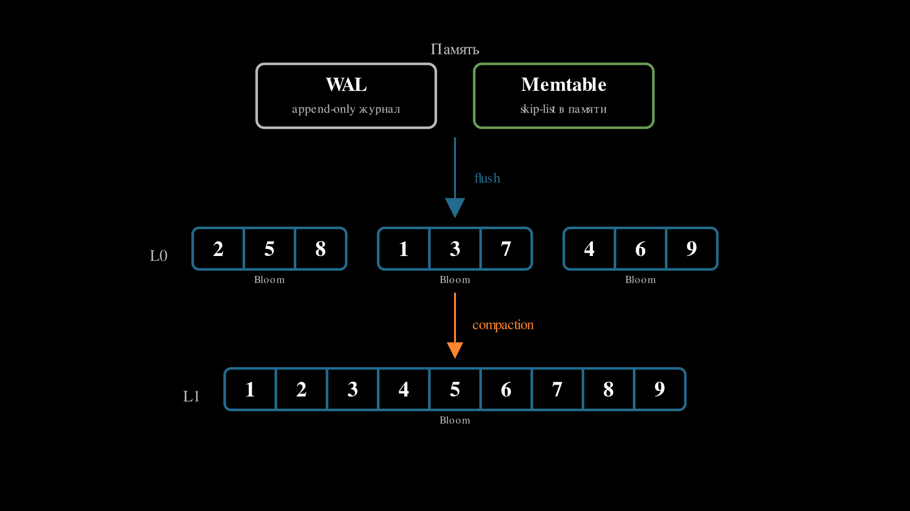
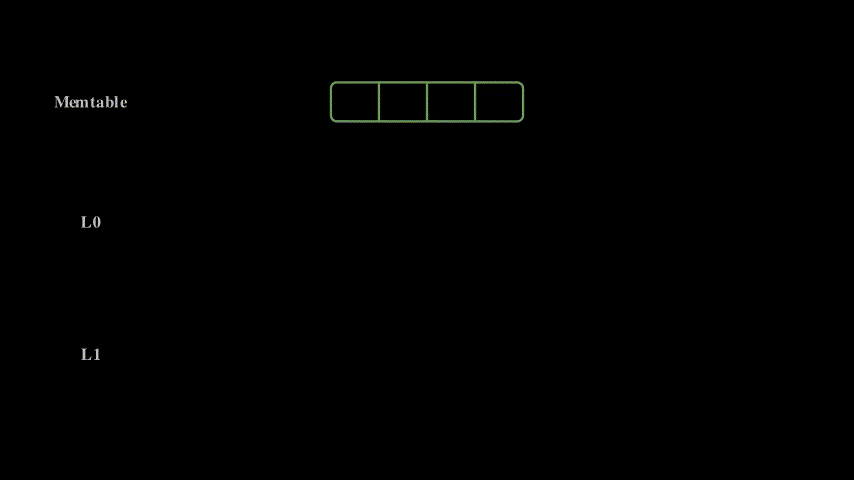

Индексы: B-tree, hash и bitmap
Сборная страница со всеми лекциями курса AIS. Доступна версия для печати (PDF).
Оглавление
Модуль 1. Архитектурные основы
- Введение. Принципы построения приложения
- Архитектурные стили и оценка продуктивности слоёв
- Сетевая модель и контракты взаимодействия
- Протоколы взаимодействия: HTTP, REST, gRPC, GraphQL, WebSocket
- Синхронные и асинхронные модели взаимодействия сервисов
Модуль 2. Фундаментальные структуры хранилищ данных
- Классификация нагрузки
- LSM-дерево: индексирование под запись
- B-дерево: индексирование на диске
- ACID, уровни изоляции, аналитические и транзакционные хранилища
- Хранилища в оперативной памяти
Модуль 3. Методы поиска похожих/близких элементов
- Специализированные индексы для поиска
- Векторный поиск и embedding
- Приближённый поиск ближайших соседей (ANN)
- Геопространственные структуры
Модуль 4. Операционные компоненты
- Прокси и Rate Limiting
- Безопасность и управление доступом
- Observability: логирование, мониторинг и планирование задач
Дополнительно
Модуль 1. Архитектурные основы
Курс начинается с фундаментальных принципов построения приложений. Прежде чем говорить о конкретных технологиях (базах данных, очередях, кешах), нужно понять как вообще организовать код, чтобы система была понятной, расширяемой и тестируемой.
Модуль отвечает на вопросы:
- Как строятся приложения? — компоненты и слои как базовые единицы организации кода (класс, модуль, сервис)
- Как разделять ответственность? — архитектурные паттерны (чистая и др архитектуры)
- Как приложения общаются? — протоколы взаимодействия (REST, gRPC, GraphQL, WebSocket)
Введение. Принципы построения приложения
Первая лекция закладывает фундамент: что такое компонент и как компоненты зависят друг от друга?
Компонент — это базовая единица вычисления или хранения данных с чётким контрактом (интерфейсом) и набором зависимостей. Это может быть класс, модуль, библиотека или микросервис. Главное — у него есть чёткая граница: что он принимает на вход, что возвращает, от чего зависит.
Управление зависимостями — ключевая задача архитектуры. Если компонент A зависит от компонента B, то изменения в B могут сломать A. Когда в проекте сотни компонентов, неконтролируемые зависимости превращают код в «клубок спагетти», где невозможно понять, что от чего зависит.
Лекция вводит понятия слоя (множество компонентов с общей ответственностью) и правил межслойных зависимостей (например, «слой бизнес-логики не должен зависеть от слоя UI»). Эти правила помогают избежать циклических зависимостей и упрощают тестирование.
Компонент
Компоненты
Рассмотрим несколько примеров:
Компонент как класс
#include <iostream>
class NumberPrinter {
public:
void print(int x) {
std::cout << x << std::endl;
}
void printRange(int from, int to) {
for (int i = from; i <= to; ++i) {
std::cout << i << std::endl;
}
}
};| Единица вычисления: | форматирование и вывод чисел |
| Интерфейс: | сигнатуры публичных методов |
| Зависимость: | консоль ввод-вывод |
| Форма реализации: | класс (ООП-модель) |
- Компонент как функция (Elixir)
def send_message(host, port, message) do
{:ok, socket} = :gen_tcp.connect(host, port, [:binary, active: false])
:ok = :gen_tcp.send(socket, message)
:gen_tcp.close(socket)
end| Единица вычисления: | передача сообщения |
| Интерфейс: | сигнатура функции |
| Зависимость: | сеть (TCP stack) |
| Форма реализации: | функция (функциональная модель) |
- Компонент как функция (Go)
func LoadUserNames(db *sql.DB) ([]string, error) {
rows, err := db.Query("SELECT name FROM users")
if err != nil {
return nil, err
}
defer rows.Close()
var result []string
for rows.Next() {
var name string
if err := rows.Scan(&name); err != nil {
return nil, err
}
result = append(result, name)
}
return result, nil
}| Единица вычисления: | извлечение данных |
| Интерфейс: | сигнатура функции |
| Зависимость: | БД (SQL, соединение) |
| Форма реализации: | функция (процедурная / Go-модель) |
Слои и зависимости
Слой
Рассмотрим пример слоя персистентности, который сохраняет различные модели в CSV:
// domain/models.go - слой моделей данных
package domain
type User struct{ ID int; Name, Email string }
type Item struct{ ID int; Title string; Price float64 }
type Storage struct{ ID int; Location string; Capacity int }// persistence/csv_persistence.go - слой персистентности
package persistence
import (
"fmt"
"os"
"strings"
"example/domain" // Явная зависимость от слоя моделей
)
func SaveUsersToCSV(users []domain.User, filename string) error {
lines := make([]string, 0, len(users))
for _, u := range users {
lines = append(lines, fmt.Sprintf("%d,%s,%s", u.ID, u.Name, u.Email))
}
return write(filename, lines)
}
func SaveItemsToCSV(items []domain.Item, filename string) error {
lines := make([]string, 0, len(items))
for _, i := range items {
lines = append(lines, fmt.Sprintf("%d,%s,%v", i.ID, i.Title, i.Price))
}
return write(filename, lines)
}
func SaveStoragesToCSV(storages []domain.Storage, filename string) error {
lines := make([]string, 0, len(storages))
for _, s := range storages {
lines = append(lines, fmt.Sprintf("%d,%s,%d", s.ID, s.Location, s.Capacity))
}
return write(filename, lines)
}
func write(filename string, lines []string) error {
return os.WriteFile(filename, []byte(strings.Join(lines, "\n")), 0644)
}Анализ слоёв:
| Слой | Компонент | Контракт (интерфейс) | Зависимости |
|---|---|---|---|
domain |
User |
struct{ ID int; Name, Email string } |
— |
domain |
Item |
struct{ ID int; Title string; Price float64 } |
— |
domain |
Storage |
struct{ ID int; Location string; Capacity int } |
— |
persistence |
SaveUsersToCSV |
([]domain.User, string) error |
domain.User, ФС |
persistence |
SaveItemsToCSV |
([]domain.Item, string) error |
domain.Item, ФС |
persistence |
SaveStoragesToCSV |
([]domain.Storage, string) error |
domain.Storage, ФС |
persistence |
write |
(string, []string) error |
ФС |
Заметим: - Слой моделей (domain): три компонента-структуры без зависимостей - Слой персистентности (persistence): четыре компонента-функции, три из которых явно зависят от типов слоя моделей - Слой персистентности зависит от слоя моделей, но не наоборот
Принципы SOLID
SOLID — набор принципов проектирования, уменьшающих связанность кода и повышающих локальность изменений.
- Принцип единственной ответственности (SRP): у компонента должна быть одна причина для изменения.
- Принцип открытости/закрытости (OCP): поведение расширяется через новые реализации, а не через модификацию стабильного кода.
- Принцип подстановки Лисков (LSP): подтип должен корректно заменять базовый тип без изменения ожидаемого поведения.
- Принцип разделения интерфейсов (ISP): лучше несколько узких интерфейсов, чем один «толстый» универсальный.
- Принцип инверсии зависимостей (DIP): бизнес-логика зависит от абстракций, а не от конкретных деталей инфраструктуры.
В контексте SOLID интерфейс удобно понимать как контракт взаимодействия: он фиксирует, что компонент обязан предоставить, но не навязывает, как это реализовано. Форма интерфейса зависит от языка: - Go: отдельный тип interface с набором методов; - Java/C# — явная декларация interface и классы-реализации; - Python: обычно протокол поведения через абстрактные базовые классы (abc) или структурные протоколы (Protocol).
Практический эффект SOLID: изменение формата хранения данных или транспортного протокола затрагивает ограниченное число компонентов, а не всю систему.
Внедрение зависимостей
После того как в системе появляется много компонентов, ключевым становится вопрос управления зависимостями между ними. Внедрение зависимостей (Dependency Injection, DI) — это способ передачи компоненту его зависимостей извне, а не создания их внутри компонента.
DI-контейнер — инфраструктурный механизм, который: - регистрирует реализации компонентов; - строит и разрешает граф зависимостей; - создаёт экземпляры в правильном порядке (с учётом времени жизни объектов).
По способу разрешения зависимостей обычно различают два подхода: - На этапе компиляции (compile-time DI): граф зависимостей формируется заранее, ошибки связей обнаруживаются до запуска приложения. - Во время выполнения (run-time DI): контейнер разрешает зависимости при запуске, что даёт больше гибкости конфигурации, но переносит часть ошибок на момент старта/работы системы.
Без DI компонент жёстко связан с конкретными реализациями (например, конкретной СУБД или конкретным HTTP-клиентом), что усложняет тестирование и замену инфраструктурных модулей. С DI компонент работает через интерфейсы, а конкретные реализации подключаются в точке композиции приложения (composition root).
Простейший пример конструкторной инъекции:
type UserRepo interface {
FindByID(id int) (User, error)
}
type UserService struct {
repo UserRepo
}
func NewUserService(repo UserRepo) *UserService {
return &UserService{repo: repo}
}
func BuildApp() *UserService {
db := NewPostgresDB()
repo := NewPostgresUserRepo(db)
return NewUserService(repo) // сборка графа зависимостей
}На небольших проектах такой граф зависимостей часто собирают вручную. По мере роста системы это становится трудоёмко: увеличивается число компонентов, ветвлений конфигурации и рисков ошибиться в порядке инициализации. Поэтому на практике используют готовые библиотеки: - Go: uber-go/dig, google/wire; - Java/Kotlin: Spring Container, Guice, Dagger; - .NET: встроенный контейнер Microsoft.Extensions.DependencyInjection, Autofac; - Python: dependency-injector, Dishka; - Node.js/TypeScript: InversifyJS, NestJS DI.
Отдельный класс нюансов связан с временем жизни объектов. Обычно различают: - Singleton (один экземпляр на приложение), - Scoped (один экземпляр на запрос/операцию), - Transient (новый экземпляр при каждом запросе зависимости).
Точные правила объявления и разрешения времени жизни зависят от конкретной библиотеки контейнера.
Практические правила: - создавать зависимости на границе приложения, а не внутри бизнес-методов; - передавать зависимости через конструктор или параметры инициализации; - не превращать DI-контейнер в «глобальный сервис-локатор».
Результат: проще модульные тесты, дешевле замена инфраструктуры, прозрачнее граф зависимостей.
Архитектурные стили и оценка продуктивности слоёв
В предыдущем разделе были зафиксированы локальные правила проектирования компонентов и связей между ними. Теперь рассмотрим архитектуру на уровне всей системы: направление зависимостей, оценку продуктивности слоёв и альтернативные архитектурные подходы.
Чистая архитектура (Clean Architecture)
Чистая архитектура задаёт правило направленности зависимостей: внешние слои зависят от внутренних, но не наоборот.
Типичная структура: - Entities / Domain: бизнес-сущности и инварианты; - Use Cases / Application: сценарии применения и оркестрация бизнес-операций; - Interface Adapters: контроллеры, presenters, репозитории-адаптеры; - Frameworks & Drivers: веб-фреймворк, база данных, брокеры сообщений, внешние API.
(диаграмма опущена при переносе)
Ключевая идея: бизнес-правила должны оставаться работоспособными при смене базы данных, очереди или веб-фреймворка. Это не исключает использование фреймворков; это требует, чтобы фреймворк был деталью, а не центром архитектуры.
Связка с предыдущим материалом: - SOLID снижает связанность на уровне отдельных компонентов; - DI управляет связями между компонентами; - Clean Architecture фиксирует направление зависимостей на уровне всей системы.
Вместе они формируют практический каркас, позволяющий масштабировать кодовую базу без неконтролируемого роста архитектурного долга.
Продуктивность слоя
После фиксации принципов проектирования можно количественно оценить качество декомпозиции слоёв.
Прокси-компонент — компонент, не реализующий собственной вычислительной ответственности, а лишь делегирующий вызовы компонентам других слоёв.
Продуктивность слоя — количественная мера архитектурной самостоятельности слоя, определяемая долей компонентов, реализующих собственную вычислительную ответственность.
Формальное задание меры
Пусть: - \(N\) — общее количество компонентов в слое - \(P\) — количество прокси-компонентов в слое
Тогда коэффициент проксирования слоя определяется как:
\[K_{\text{proxy}} = \frac{P}{N}\]
а продуктивность слоя — как дополняющая величина:
\[K_{\text{prod}} = 1 - K_{\text{proxy}} = 1 - \frac{P}{N}\]
В стандартной литературе (например, Clean Architecture) слой считается продуктивным, если \(K_{\text{prod}} \ge 0.8\), то есть не менее 80% компонентов реализуют собственную вычислительную ответственность.
Пример непродуктивного проксирующего слоя:
Рассмотрим излишний слой сервисов, большинство компонентов которого только делегируют вызовы к слою персистентности:
// service/user_service.go - непродуктивный слой сервисов
package service
import (
"example/domain"
"example/persistence"
"strings"
)
func GetUser(id int) (*domain.User, error) {
return persistence.LoadUser(id)
}
func SaveUser(user *domain.User) error {
return persistence.SaveUser(user)
}
func DeleteUser(id int) error {
return persistence.DeleteUser(id)
}
func ListUsers() ([]*domain.User, error) {
return persistence.ListUsers()
}
func SearchUsersByName(query string) ([]*domain.User, error) {
users, err := persistence.ListUsers()
if err != nil {
return nil, err
}
var result []*domain.User
for _, u := range users {
if strings.Contains(strings.ToLower(u.Name), strings.ToLower(query)) {
result = append(result, u)
}
}
return result, nil
}Анализ слоя сервисов:
| Компонент | Контракт | Собственная ответственность |
|---|---|---|
GetUser |
(int) (*User, error) |
Нет — прямая делегация |
SaveUser |
(*User) error |
Нет — прямая делегация |
DeleteUser |
(int) error |
Нет — прямая делегация |
ListUsers |
() ([]*User, error) |
Нет — прямая делегация |
SearchUsersByName |
(string) ([]*User, error) |
Да — фильтрация и поиск |
Продуктивность слоя: \(K_{\text{prod}} = 1 - \frac{4}{5} = 0.2\) (20% — непродуктивный слой)
Такой слой не добавляет архитектурной ценности и лишь усложняет кодовую базу, увеличивая количество уровней косвенности без предоставления дополнительной функциональности.
Альтернативные архитектурные паттерны
После изучения классических подходов (слоистая архитектура, Clean Architecture, SOLID) важно понять, что нет единственно правильного способа организации кода. Разные задачи требуют разных подходов.
Раздел показывает альтернативные парадигмы: - Framework-based архитектура (Rails, Django) — фреймворк диктует структуру, вы заполняете пробелы. Быстро для типовых задач, но ограничивает гибкость. - Actor Model (Erlang, Akka) — вместо объектов и функций — изолированные процессы, обменивающиеся сообщениями. Идеально для высоконагруженных телекоммуникационных систем. - Data-Oriented Design — оптимизация под архитектуру процессора (кеш-линии, SIMD). Критично для игровых движков и симуляций, где производительность — главное.
Выбор архитектуры зависит от контекста: стартапу нужна скорость разработки (Rails), телеком-системе — отказоустойчивость (Erlang), игровому движку — производительность (DOD). Нет «лучшей» архитектуры — есть подходящая для конкретной задачи.
Архитектура на основе фреймворка (Rails, Django)
Фреймворк предполагает стандартную структуру папок, именование файлов и шаблоны проектирования (зачастую, MVC), что уменьшает количество принимаемых решений и ускоряет разработку. - “Мнения” фреймворка: Rails/Django имеют предустановленные “мнения” по работе с БД (ORM), маршрутизацией, шаблонизацией и аутентификацией.
Модель акторов (Erlang/Elixir/Akka)
- Революционная технология, созданная в Ericsson еще в 1986 году для телекоммуникационных систем с требованием “пяти девяток” доступности.
- Она на десятилетия опередила современные подходы: предоставляет
- встроенную распределенность (кластеры из коробки),
- философия “Let it Crash!” с автоматическим самовосстановлением
- горячее обновление кода без остановки системы
- невероятную параллельность (миллионы изолированных процессов)
- WhatsApp: Всего 50 инженеров обрабатывали 2 миллиарда сообщений в день на одном сервере!
- Discord
Проектирование, ориентированное на данные (Data-oriented design)
Подход, фокусирующийся на эффективной организации данных в памяти для оптимального использования кэша процессора. Используется где производительность упирается в скорость доступа к памяти. - игровые движки - обработки физики - AI - симуляции
Сетевая модель и контракты взаимодействия
Прежде чем выбирать конкретный прикладной протокол (REST, gRPC, GraphQL), необходимо понять как вообще устроена передача данных между двумя программами и что такое контракт взаимодействия.
Протокол — это договор
Протокол — это набор правил, по которым две стороны обмениваются данными. Без договорённости о формате, порядке и значении сообщений коммуникация невозможна.
Пример из университетской жизни: чтобы получить справку в деканате, студент должен следовать протоколу — заполнить заявление по установленной форме (формат сообщения), подать его в определённое окно в рабочие часы (канал и адресация), дождаться обработки и получить ответ с печатью (формат ответа и подтверждение). Если студент напишет заявление в свободной форме, придёт не в тот кабинет или забудет номер студенческого — протокол нарушен и результата не будет. Между компьютерами происходит то же самое, только договорённости формализованы и многоуровневы.
Ключевое свойство: каждый уровень коммуникации опирается на свой протокол, и верхние уровни не обязаны знать, как именно работают нижние. Это называется инкапсуляцией уровней.
Модель OSI: семь уровней договорённостей
Модель OSI (Open Systems Interconnection) описывает сетевое взаимодействие как стек из семи уровней. Каждый уровень решает свою задачу и предоставляет сервис уровню выше.
Как уровни строятся друг на друге
Каждый следующий уровень — это новый договор, который опирается на возможности предыдущего. Построим стек снизу вверх:
Есть провод (L1 — физический). Два компьютера соединены медным кабелем. Договариваемся: напряжение выше +0.5 В — это «1», ниже −0.5 В — это «0»; передаём с частотой 100 МГц.
Вход: электрический сигнал+V −V −V +V +V −V −V +V. Выход: поток битов10011001.Разбиваем биты на кадры (L2 — канальный). Непрерывный поток битов бесполезен — неясно, где начало сообщения и кому оно адресовано. Договариваемся разбивать поток на кадры (frames): в начале каждого кадра — преамбула (фиксированная последовательность битов для синхронизации), затем MAC-адрес получателя (
AA:BB:CC:DD:EE:FF), MAC-адрес отправителя, длина, полезная нагрузка и контрольная сумма. Сетевая карта читает MAC-адрес — если это её адрес, принимает кадр, иначе игнорирует.
Вход: поток битов10011001.... Выход: кадр[преамбула][dst: AA:BB:CC:DD:EE:FF][src: 11:22:33:44:55:66][данные][CRC], доставленный конкретному устройству в локальной сети.Добавляем маршрутизацию между сетями (L3 — сетевой). MAC-адреса работают только в пределах одного сегмента сети. Чтобы связать сети, оборачиваем данные в IP-пакет: заголовок содержит IP-адрес отправителя (
192.168.1.10) и получателя (93.184.216.34). Маршрутизатор на границе сети читает IP-адрес назначения, находит следующий узел в таблице маршрутизации и пересылает пакет дальше — и так по цепочке до целевой сети.
Вход: кадр с данными. Выход: IP-пакет[src: 192.168.1.10][dst: 93.184.216.34][данные], доставленный на нужный компьютер через произвольное количество промежуточных сетей.Доставляем данные конкретной программе (L4 — транспортный). На одном компьютере работают десятки процессов: веб-сервер, база данных, почтовый клиент. IP доставил пакет на машину, но кому именно? Договариваемся о портах — числовых идентификаторах (0–65535). TCP добавляет к каждому сегменту порт отправителя и получателя (например,
:443), а также порядковый номер, подтверждение доставки и контрольную сумму. Если сегмент потерялся — TCP замечает пропуск в номерах и запрашивает повторную отправку.
Вход: IP-пакет, доставленный на машину. Выход: TCP-сегмент[src port: 51234][dst port: 443][seq: 1][ack: 1][данные], надёжно доставленный конкретному процессу.Шифруем и форматируем (L5/L6 — сеансовый и представления). Данные доставляются, но в открытом виде — любой промежуточный узел может их прочитать. Договариваемся о TLS: клиент и сервер выполняют handshake (обмениваются сертификатами и ключами), после чего весь поток шифруется. Также на этом уровне фиксируется кодировка (UTF-8) и формат сериализации (JSON, XML, бинарный).
Вход: поток байтовGET /users/42...в открытом виде. Выход: зашифрованный поток17 03 03 00 1A 8b 4e ...— без ключа содержимое нечитаемо.Определяем смысл сообщений (L7 — прикладной). Все нижние уровни обеспечивают доставку, но не определяют что означает переданное сообщение. На прикладном уровне фиксируем протокол — например, HTTP: клиент отправляет
GET /users/42 HTTP/1.1, сервер отвечает200 OKс телом{"id": 42, "name": "Alice"}. Метод, путь, заголовки и код статуса — всё это договорённости прикладного протокола.
Каждый уровень оборачивает данные в свой «конверт» (заголовок) при отправке — это инкапсуляция. На принимающей стороне каждый уровень снимает свой заголовок и передаёт содержимое выше — это декапсуляция.
Практическое упрощение: TCP/IP
На практике чаще используют четырёхуровневую модель TCP/IP, которая объединяет уровни OSI:
| Уровень TCP/IP | Задача | Соответствие OSI |
|---|---|---|
| Прикладной | Протокол приложения (HTTP, DNS, …) | L5–L7 |
| Транспортный | Доставка данных процессу (TCP/UDP) | L4 |
| Сетевой | Маршрутизация между сетями (IP) | L3 |
| Канальный | Доставка в локальной сети | L1–L2 |
Для разработчика ключевые уровни — транспортный и прикладной. Именно здесь принимаются архитектурные решения: выбор между TCP и UDP, между HTTP/1.1 и HTTP/2, между текстовым и бинарным форматом сообщений.
TCP vs UDP: два подхода к доставке
TCP (Transmission Control Protocol) — надёжный, упорядоченный, с контролем потока. Гарантирует доставку и порядок. Используется для HTTP, gRPC, баз данных — везде, где потеря данных недопустима.
UDP (User Datagram Protocol) — минимальный, без гарантий доставки и порядка. Используется для видеозвонков, онлайн-игр, DNS — там, где скорость важнее полноты.
Выбор транспорта определяется требованиями прикладного протокола: HTTP требует TCP, а потоковое видео допускает потери и выбирает UDP.
HTTP — прикладной протокол веба
TCP умеет надёжно доставлять поток байтов между двумя процессами. Но он ничего не знает о смысле этих байтов — для TCP строка GET /users/42 и случайный набор символов одинаковы. Нужен следующий договор: как именно клиент формулирует запрос и как сервер отвечает.
Этот договор — HTTP (HyperText Transfer Protocol). Он фиксирует текстовый формат сообщений поверх TCP-соединения.
Структура HTTP-запроса
Клиент отправляет текстовое сообщение строго определённой структуры:
GET /users/42 HTTP/1.1
Host: api.example.com
Accept: application/json
Authorization: Bearer eyJhbGciOi...Компоненты запроса: - Стартовая строка: метод (GET), путь (/users/42), версия протокола (HTTP/1.1) - Заголовки: пары ключ-значение с метаинформацией — куда обращаемся (Host), какой формат ответа ожидаем (Accept), как авторизуемся (Authorization) - Пустая строка: разделитель между заголовками и телом - Тело (опционально): полезная нагрузка — например, JSON при создании ресурса
Структура HTTP-ответа
Сервер отвечает в аналогичном формате:
HTTP/1.1 200 OK
Content-Type: application/json
Content-Length: 42
{"id": 42, "name": "Alice", "email": "alice@example.com"}Компоненты ответа: - Статусная строка: версия протокола, код статуса (200), текстовое пояснение (OK) - Заголовки: тип содержимого (Content-Type), размер тела (Content-Length) - Тело: полезная нагрузка ответа
HTTP-методы
HTTP определяет методы — глаголы, описывающие намерение клиента:
| Метод | Семантика | Тело запроса |
|---|---|---|
GET |
Получить ресурс. Не изменяет состояние сервера. | Нет |
POST |
Создать новый ресурс или выполнить операцию. | Да |
PUT |
Полностью заменить ресурс. | Да |
PATCH |
Частично обновить ресурс. | Да |
DELETE |
Удалить ресурс. | Обычно нет |
Методы — это именно договорённость о намерении. Технически через GET можно удалять данные, но это нарушает протокол и ломает кеширование, прокси и поведение браузера.
Коды статуса
Код статуса сообщает клиенту результат обработки запроса. Коды сгруппированы по сотням:
| Диапазон | Значение | Примеры |
|---|---|---|
1xx |
Информационный — запрос принят, обработка продолжается | 101 Switching Protocols |
2xx |
Успех — запрос обработан корректно | 200 OK, 201 Created, 204 No Content |
3xx |
Перенаправление — ресурс доступен по другому адресу | 301 Moved Permanently, 304 Not Modified |
4xx |
Ошибка клиента — запрос некорректен | 400 Bad Request, 401 Unauthorized, 404 Not Found |
5xx |
Ошибка сервера — запрос корректен, но сервер не смог обработать | 500 Internal Server Error, 503 Service Unavailable |
От HTTP к REST
HTTP сам по себе — это протокол передачи сообщений. Он не навязывает, как организовать API: можно сделать единственный эндпоинт POST /api и передавать всё в теле, а можно использовать десятки путей без какой-либо системы.
REST (Representational State Transfer) — это архитектурный стиль, который задаёт правила организации API поверх HTTP:
- Ресурсы: каждая сущность (пользователь, заказ, товар) адресуется собственным URI:
/users/42,/orders/7. - Методы = операции: HTTP-методы отражают действие над ресурсом —
GET /users/42читает,DELETE /users/42удаляет. - Коды статуса = результат:
201 Createdпри создании,404 Not Foundесли ресурс не существует,409 Conflictпри конфликте. - Stateless: каждый запрос содержит всю информацию для обработки — сервер не хранит состояние между запросами.
Пример CRUD-операций над ресурсом «пользователи»:
| Операция | Запрос | Тело | Ответ |
|---|---|---|---|
| Список | GET /users |
— | 200 OK + массив JSON |
| Чтение | GET /users/42 |
— | 200 OK + объект JSON |
| Создание | POST /users |
{"name": "Bob"} |
201 Created + объект с id |
| Обновление | PUT /users/42 |
{"name": "Bob2"} |
200 OK + обновлённый объект |
| Удаление | DELETE /users/42 |
— | 204 No Content |
REST — не стандарт и не спецификация, а набор принципов. Конкретный API может следовать им строго или частично. Именно поэтому существует потребность в формальных спецификациях, которые фиксируют контракт однозначно.
Контракт API: от договорённости к спецификации
Протокол определяет как передаются данные. Но для взаимодействия двух сервисов этого недостаточно — нужен контракт: формальное описание того, какие операции доступны, какие данные они принимают и возвращают.
Без контракта разработчики двух сервисов вынуждены договариваться устно или читать чужой код. Это не масштабируется: при десятках сервисов и нескольких командах устные договорённости ломаются.
Поэтому существуют формальные спецификации API — машиночитаемые описания контрактов.
OpenAPI (Swagger) — спецификация REST API
OpenAPI описывает REST API в формате YAML или JSON: эндпоинты, методы, параметры, тела запросов и ответов, коды ошибок.
openapi: "3.0.3"
info:
title: User Service
version: "1.0"
paths:
/users/{id}:
get:
summary: Получить пользователя по ID
parameters:
- name: id
in: path
required: true
schema:
type: integer
responses:
"200":
description: Пользователь найден
content:
application/json:
schema:
$ref: "#/components/schemas/User"
"404":
description: Пользователь не найден
components:
schemas:
User:
type: object
properties:
id:
type: integer
name:
type: string
email:
type: string
format: emailИз OpenAPI-спецификации автоматически генерируются: документация (Swagger UI), клиентские SDK, серверные заглушки (stubs) и валидаторы запросов.
Protocol Buffers — спецификация gRPC
gRPC использует .proto-файлы для описания сервисов и сообщений. Формат строго типизирован и компилируется в код на целевом языке.
syntax = "proto3";
service UserService {
rpc GetUser (GetUserRequest) returns (User);
rpc ListUsers (ListUsersRequest) returns (stream User);
}
message GetUserRequest {
int32 id = 1;
}
message ListUsersRequest {
int32 page_size = 1;
string page_token = 2;
}
message User {
int32 id = 1;
string name = 2;
string email = 3;
}Из .proto-файла генерируются клиент и сервер — разработчику остаётся реализовать бизнес-логику. Контракт гарантирует совместимость: если поле добавлено корректно (новый номер), старые клиенты продолжат работать.
GraphQL SDL — спецификация GraphQL API
GraphQL описывает API через схему (Schema Definition Language), которая определяет типы данных и доступные запросы.
type User {
id: ID!
name: String!
email: String!
posts: [Post!]!
}
type Post {
id: ID!
title: String!
content: String!
}
type Query {
user(id: ID!): User
users(limit: Int = 10): [User!]!
}Схема является и документацией, и контрактом, и инструментом валидации: сервер отклонит запрос, который не соответствует схеме.
Общий принцип: спецификация = единый источник правды
Во всех трёх подходах формальная спецификация служит единым источником правды (single source of truth) для всех участников:
| Свойство | OpenAPI | Proto (gRPC) | GraphQL SDL |
|---|---|---|---|
| Формат | YAML / JSON | .proto |
SDL (текст) |
| Типизация | JSON Schema | Строгая, бинарная | Строгая, граф |
| Кодогенерация | Клиент, документация | Клиент + сервер | Клиент, валидация |
| Версионирование | URL (/v1, /v2) |
Номера полей | Эволюция схемы |
| Транспорт | HTTP/1.1+ | HTTP/2 | HTTP (обычно) |
Связь уровней OSI и контрактов
Спецификации API работают на прикладном уровне (L7), но опираются на весь стек:
- L4 (TCP) обеспечивает надёжную доставку — без этого ни один API-вызов не завершится.
- L6/L5 (TLS) обеспечивают шифрование — без этого контракт выполняется, но данные видны третьим лицам.
- L7 (HTTP/HTTP2) задаёт правила обмена сообщениями — заголовки, методы, коды статуса.
- Спецификация API (OpenAPI, proto, SDL) фиксирует бизнес-семантику поверх HTTP: какие операции существуют, что принимают и возвращают.
Таким образом, каждый уровень — это свой договор, и прикладной контракт является верхним слоем этой пирамиды договорённостей.
Протоколы взаимодействия: HTTP, REST, gRPC, GraphQL, WebSocket
В предыдущей лекции мы разобрали модель OSI, понятие протокола как договора и форматы спецификаций API (OpenAPI, Proto, GraphQL SDL). Теперь рассмотрим конкретные прикладные протоколы и их практическое применение.
Прикладные протоколы взаимодействия
Лекция рассматривает четыре прикладных протокола: REST, gRPC, GraphQL и WebSocket. Они решают разные классы задач: классический обмен «запрос-ответ», высокопроизводительные межсервисные удалённые вызовы процедур (RPC), гибкие выборки данных и двустороннюю коммуникацию в реальном времени. Выбор протокола определяется требованиями к производительности, удобству интеграции, гибкости модели данных и характеру пользовательского сценария.
REST
- Модель взаимодействия: запрос-ответ на основе HTTP-методов (
GET,POST,PUT,DELETE) и кодов статуса. - Формат и транспорт: обычно HTTP + JSON; ресурсы адресуются URI (например,
/api/users/123). - Преимущества: простота, широкая совместимость, удобная диагностика и развитая экосистема (Swagger/OpenAPI).
- Ограничения: избыточный объём данных и необходимость множества конечных точек API для разных сценариев представления.
- Нюансы внедрения: важно строго соблюдать семантику HTTP-методов, корректно использовать коды ответов, а также проектировать версионирование API (например,
/v1) и политику обратной совместимости.
gRPC
- Модель взаимодействия: удалённые вызовы процедур (RPC), включая одиночные и потоковые вызовы.
- Формат и транспорт: Protocol Buffers как схема данных, HTTP/2 как транспорт.
- Преимущества: высокая производительность, компактная бинарная сериализация, строгая типизация контракта.
- Ограничения: более сложная отладка, обязательная кодогенерация и ограничения прямого использования в браузере (обычно через gRPC-Web).
- Нюансы внедрения: необходима дисциплина эволюции
.proto-контрактов (зарезервированные поля и совместимость схем), настройка дедлайнов и метаданных, а также понимание инфраструктурных ограничений (балансировщики, прокси, наблюдаемость HTTP/2-трафика).
GraphQL
- Модель взаимодействия: клиент формулирует запрос как дерево полей и получает только требуемые данные.
- Формат и транспорт: чаще всего HTTP с единой точкой входа (
/graphql); ответы обычно в JSON. - Преимущества: уменьшение избыточной и недостаточной выборки данных (over-fetching/under-fetching) и удобная поддержка разных экранов и клиентских сценариев.
- Ограничения: более сложная эксплуатация (контроль сложности запросов, кэширование, авторизация на уровне полей).
- Нюансы внедрения: критично ограничивать глубину и вычислительную сложность запросов, предотвращать проблему N+1 через пакетирование запросов (batching/DataLoader) и явно проектировать границы ответственности слоя резолверов.
WebSocket
- Модель взаимодействия: постоянное двустороннее соединение между клиентом и сервером.
- Формат и транспорт: устанавливается через
HTTP Upgrade, далее обмен сообщениями идёт по WebSocket-каналу. - Преимущества: низкая задержка и серверные push-обновления без постоянного опроса.
- Ограничения: более сложное управление соединениями (повторное подключение, контроль активности соединения, регулирование входящего потока) и хранение состояния соединений на сервере.
- Нюансы внедрения: требуются протокол прикладных сообщений (типы событий, версии), механизмы восстановления соединения, защита от «медленных» клиентов и план масштабирования соединений с состоянием (маршрутизация с привязкой к узлу или внешний канал публикации/подписки).
Синхронные и асинхронные модели взаимодействия сервисов
В синхронной модели взаимодействия клиент отправляет запрос и ожидает ответ в рамках того же пользовательского действия. Для REST, gRPC и GraphQL это базовый режим работы; WebSocket обычно используется для постоянного двустороннего обмена, но также требует управления таймингами и отказами. Синхронная модель удобна, когда нужен мгновенный результат, но именно здесь появляются основные эксплуатационные риски распределённых систем.
Цена синхронного взаимодействия и альтернатива
Когда сервис делает синхронный вызов по схеме «запрос-ответ» и ждёт результат, он напрямую зависит от доступности и скорости downstream-сервиса. Практически это означает три базовых класса отказов:
- Тайм-аут: зависимость отвечает слишком долго, и вызывающая сторона прерывает ожидание.
- Неопределённый результат операции: вызывающая сторона не получила ответ и не знает, была ли операция выполнена на стороне зависимости.
- Каскадная деградация: медленный или недоступный downstream удерживает ресурсы upstream-сервисов (пулы соединений, воркеры, потоки), снижая общую пропускную способность системы.
В синхронной модели именно вызывающая сторона (клиент запроса) обычно задаёт timeout и стратегию повторов (retry), потому что только она знает допустимое время ожидания в рамках пользовательского сценария и может принять решение: ждать дальше, повторить вызов или вернуть ошибку наверх. Если эти параметры не заданы, зависший downstream начинает удерживать поток/воркер, и при росте нагрузки это быстро приводит к исчерпанию ресурсов.
Упрощённо это выглядит так:
// Клиент управляет временем и повторами вызова.
ctx, cancel := context.WithTimeout(parentCtx, 300*time.Millisecond)
defer cancel()
for attempt := 1; attempt <= 3; attempt++ {
resp, err := paymentsClient.Charge(ctx, req) // синхронный RPC/HTTP-вызов
if err == nil {
return resp, nil
}
if !isTemporary(err) {
return nil, err // логическую ошибку не ретраим
}
sleep(backoffWithJitter(attempt))
}
return nil, ErrUpstreamUnavailableТакая логика необходима, но сама по себе создаёт дополнительные риски, которые нужно проектировать заранее.
Повторные попытки (Retries)
Проблема. Повторы без ограничений и без случайного разброса задержки (jitter) во время инцидента создают «шторм повторов». Следствие. Зависимость получает ещё больше трафика в момент деградации, а время восстановления увеличивается. Что делать. Повторять только временные ошибки, ограничивать число попыток, применять экспоненциальную задержку (backoff) и jitter, а также общий бюджет времени на операцию.
Идемпотентность (Idempotency)
Проблема. Повтор неидемпотентного запроса может выполнить бизнес-действие повторно. Следствие. Появляются дубликаты операций (например, двойное списание или двойная отправка заказа). Что делать. Использовать ключ идемпотентности (idempotency key) для операций с побочным эффектом и возвращать результат первой успешной обработки при повторе.
Автоматическое размыкание цепи (Circuit Breaker)
Проблема. Даже при наличии таймаутов трафик продолжает идти в недоступную зависимость. Следствие. Возникает каскадная деградация: upstream теряет ресурсы на заведомо безуспешные вызовы. Что делать. При превышении порога ошибок размыкать цепь, временно отклонять вызовы или переключаться на резервный сценарий (fallback), затем выполнять ограниченные пробные запросы в промежуточном состоянии восстановления.
Передача дедлайна (Deadline Propagation)
Проблема. В цепочке сервисов внутренние таймауты часто не согласованы с исходным SLA запроса. Следствие. Внутренний вызов может ждать дольше, чем разрешено клиентом, и результат становится бесполезным. Что делать. Передавать единый дедлайн по всей цепочке, рассчитывать таймауты от оставшегося бюджета и логировать остаток времени в трассировке.
Практически это означает, что timeout, retry, idempotency, circuit breaker и deadline propagation следует рассматривать как единый контур устойчивости, а не как независимые опции.
Альтернатива — асинхронное взаимодействие: сервис не блокируется в ожидании ответа, а публикует событие или задачу в брокер/очередь. Это снижает связность по времени и лучше переживает пики нагрузки, но добавляет модель согласования состояния со временем (eventual consistency), необходимость дедупликации и контроль отставания потребителей очереди.
Во многих практических сценариях (обработка видео, генерация отчётов, интеграции с внешними системами, массовые рассылки) мгновенный ответ не нужен, поэтому асинхронная модель оказывается устойчивее и дешевле в эксплуатации.
Зачем асинхронность
- Развязка сервисов: отправитель не ждёт, пока получатель завершит обработку
- Устойчивость к пикам нагрузки: очередь буферизует всплески
- Повышение надёжности: повторная доставка, управляемые повторы и очередь проблемных сообщений (DLQ)
- Улучшение UX: пользователь получает быстрый
202 Accepted, тяжёлая работа уходит в фон
Брокеры сообщений и очереди
- Kafka — журнал событий (event log), высокая пропускная способность, партиции, группы потребителей
- RabbitMQ — классические очереди задач, гибкая маршрутизация, подтверждения доставки
- Pub/Sub — одно событие читают несколько подписчиков (аналитика, уведомления, антифрод)
- Task Queue — одно задание исполняет один воркер (рендер PDF, отправка email)
Обмен файлами как асинхронный контракт
- Подходит для batch-интеграций между системами и организациями
- Примеры: S3/shared folder/SFTP, форматы CSV/Parquet/JSONL
- Важные практики: версионирование схемы, checksum, идемпотентная загрузка, дедупликация
- Риски: задержки, частичная загрузка, конфликт версий; нужны валидаторы и правила ретраев
Надёжность и согласованность
- Гарантии доставки: не более одного раза (at-most-once), не менее одного раза (at-least-once), практически однократно (effectively-once, через идемпотентность)
- Согласование состояния со временем (eventual consistency): состояние сходится не мгновенно, а через поток событий
- Подход Saga: длинные бизнес-процессы с компенсирующими действиями
Постскриптум: критерий архитектурного выбора
Итог первого модуля: большинство инструментов «работают» и действительно способны решить задачу. REST, gRPC, GraphQL, WebSocket, очереди и файловые интеграции — каждый подход может дать рабочий результат в правильном контексте.
Поэтому хороший архитектор не выбирает «любимый» инструмент заранее. Он выбирает инструмент под задачу, учитывая ограничения:
- требования к задержке и пропускной способности;
- характер пользовательского сценария (синхронный ответ или фоновая обработка);
- стоимость сопровождения и наблюдаемости;
- требования к надёжности, безопасности и эволюции контракта.
Рассмотренные в модуле принципы нужны именно для этого: принимать инженерные решения не по привычке, а по критериям конкретной системы.
Модуль 2. Фундаментальные структуры хранилищ данных
Мы познакомились с архитектурными паттернами построения приложений и протоколами обмена данными между компонентами. Теперь возникает следующий вопрос: где и как хранить данные?
Задача выбора хранилища нетривиальна. На рынке сотни решений: реляционные базы, документные хранилища, key-value stores, колоночные базы, графовые базы, временны́е ряды. Каждое решение оптимизировано под определённый паттерн нагрузки, и неправильный выбор приводит к проблемам производительности, которые сложно исправить без миграции.
Чтобы осознанно выбирать между PostgreSQL и ClickHouse, между Redis и MongoDB, нужно понимать внутреннее устройство этих систем. В этом модуле мы разберём фундаментальные структуры данных, лежащие в основе современных хранилищ.
Классификация нагрузки
Прежде чем выбирать базу данных или структуру хранения, нужно понять какая нагрузка будет на систему. База данных для интернет-магазина (миллионы мелких транзакций) и база данных для аналитики (сканирование миллиардов строк) требуют совершенно разных подходов.
Эта лекция вводит классификацию нагрузок: - OLTP (Online Transaction Processing) — много коротких транзакций, чтение/запись отдельных строк (интернет-магазин, банковские переводы, бронирование билетов) - OLAP (Online Analytical Processing) — редкие, но тяжелые запросы, сканирование миллионов строк для агрегации (отчёты, бизнес-аналитика, data science)
Для OLTP критично время отклика одной транзакции (миллисекунды), для OLAP — пропускная способность (миллионы строк в секунду). Отсюда разные структуры хранения: OLTP использует строковое хранение (B-tree), OLAP — колоночное (Parquet, ClickHouse).
Лекция показывает, как оценить нагрузку через метрики (RPS, размер данных, паттерны доступа) и на основе этого выбрать подходящее хранилище.
Типы операций
Зачастую взаимодействие с хранилищем сводится к ограниченному набору операций:
| Тип | Операция | Пример |
|---|---|---|
| Чтение | Point lookup | SELECT * FROM users WHERE id = 123 |
| Чтение | Multi-get | SELECT * FROM users WHERE id IN (1, 2, 3) |
| Чтение | Range scan | SELECT * FROM orders WHERE date BETWEEN '...' AND '...' |
| Чтение | Prefix scan | SELECT * FROM logs WHERE key LIKE 'user:123:%' |
| Чтение | Full scan | SELECT AVG(price) FROM products |
| Запись | Insert | вставка новой записи (ошибка при дубликате) |
| Запись | Update | изменение существующей записи |
| Запись | Upsert | INSERT ... ON CONFLICT DO UPDATE |
| Запись | Delete | удаление записи |
| Запись | Batch write | запись нескольких записей |
| Комб. | Read-modify-write | UPDATE accounts SET balance = balance + 100 |
| Комб. | Increment | INCR views:page:123 (атомарный счётчик) |
Метрики нагрузки
| Метрика | Расшифровка | Описание |
|---|---|---|
| DAU | Daily Active Users | уникальные пользователи за сутки |
| MAU | Monthly Active Users | уникальные пользователи за месяц |
| RPS | Requests Per Second | пользовательских запросов (например HTTP) в секунду |
| QPS | Queries Per Second | запросов к БД в секунду |
| TPS | Transactions Per Second | транзакций БД в секунду |
| IOPS | I/O Operations Per Second | операций ввода-вывода в секунду |
Характеристики нагрузки
Read/Write ratio: - 90/10 — преобладание чтения: кэширование, CDN, статический контент - 50/50 — сбалансированная: социальные сети, e-commerce - 10/90 — преобладание записи: логирование, IoT, метрики
Размер записи: - < 1 KB — Метаданные, Сессия, счётчики - 1-100 KB — JSON-документы, профили пользователей - 100 KB - 1 MB — статьи, посты с изображениями - > 1 MB — медиафайлы, бинарные данные
Паттерн доступа: - random — point lookup по ключу, случайные запросы - sequential — range scan, time-series, логи
Требования к латентности: - p50 < 50 мс — медиана, типичный пользовательский опыт - p99 < 200 мс — 1% худших запросов, важно для SLA - p999 < 1 с — 0.1% худших, критично для финтеха
Почему p99 важнее среднего: если p99 = 500 мс при 10000 QPS, то 100 запросов в секунду будут медленными — это 8.6 млн медленных запросов в сутки.
Связь метрик: от DAU к QPS
Ключевая задача — перевести бизнес-метрики (DAU) в технические (QPS, IOPS).
Полезные константы: секунд в сутках \(\approx 10^5\) (точно: 86400), в месяце \(\approx 2.5 \times 10^6\), в году \(\approx 3 \times 10^7\).
Формула DAU → RPS: \[\text{RPS}_\text{средний} = \frac{\text{DAU} \times \text{действий на пользователя}}{10^5}\]
Пример: 100K DAU, 20 действий/день → \(100000 \times 20 / 100000 = 20\) RPS (средний).
Учёт пиков: нагрузка распределена неравномерно. Активные часы — 12 из 24, пиковые — 4 часа с нагрузкой в 3× от среднего.
\[\text{RPS}_\text{пиковый} \approx \text{RPS}_\text{средний} \times 3\]
RPS → QPS: один HTTP-запрос может порождать несколько запросов к БД. - GET /products/:id → 1 SELECT (QPS = RPS) - POST /orders → BEGIN + 3 INSERT + 2 UPDATE + COMMIT (QPS ≈ 6 × RPS)
Иерархия памяти
| Уровень | Латентность | Пропускная способность |
|---|---|---|
| L1 cache | ~1 нс | ~1 ТБ/с |
| L2 cache | ~4 нс | ~500 ГБ/с |
| L3 cache | ~12 нс | ~200 ГБ/с |
| RAM | ~100 нс | ~50 ГБ/с |
| SSD (random) | ~100 мкс | ~500 МБ/с |
| SSD (seq) | ~50 мкс | ~3 ГБ/с |
| HDD (random) | ~10 мс | ~1 МБ/с |
| HDD (seq) | ~5 мс | ~200 МБ/с |
Случайный доступ на HDD в 200 раз дороже последовательного. На SSD разница меньше (~5-10x), но всё ещё значительна.
Источник: таблица основана на данных Jeff Dean (Google) и Peter Norvig, актуализированных Colin Scott. См. Latency Numbers Every Programmer Should Know и Interactive Latency.
Оценка производительности: Little’s Law
Как связать время запроса с пропускной способностью? Little’s Law — фундаментальный закон теории очередей:
\[L = \lambda \times W\]
Где \(L\) — среднее число запросов в системе (concurrency), \(\lambda\) — throughput (RPS), \(W\) — среднее время обработки.
Применение для capacity planning: - Знаем \(W\) (время запроса) и \(L\) (число ядер) → находим \(\lambda\) (max RPS) - Знаем \(\lambda\) (целевой RPS) и \(L\) → находим требуемое \(W\)
Пример: сервер с 28 ядрами, время запроса 1 мс: \[\lambda = L / W = 28 / 0.001 = 28000 \text{ RPS (теоретический максимум)}\]
Реальность: накладные расходы (context switching, lock contention, GC) снижают эффективность. Коэффициент полезной работы — 0.3–0.5: \[\lambda_\text{реальный} = 28000 \times 0.4 \approx 11000 \text{ RPS}\]
Фундаментальные компромиссы
Read vs Write: оптимизация под чтение замедляет запись и наоборот.
Space vs Time: - Компрессия — тратим CPU за уменьшение места на диске - Денормализация — тратим место за скорость чтения - Индексы — тратим место и замедляем запись за ускорение чтения
LSM-дерево: индексирование под запись
Первая структура, которую мы изучаем, это LSM-дерево (Log-Structured Merge Tree). LSM оптимизировано под высокую скорость записи. Это критично для систем, где запись доминирует над чтением: логи, метрики, IoT-телеметрия, временны́е ряды.
Идея в трёх шагах:
- Записи сначала попадают в память в структуру Memtable.
- При заполнении Memtable замораживается и сбрасывается на диск как отсортированный файл SSTable.
- Периодически файлы сливаются фоновой компакцией, чтобы избежать фрагментации и удалить устаревшие версии.
LSM используется в Cassandra, RocksDB, LevelDB, HBase, Google Bigtable. Компромисс понятен: быстрая запись, но чтение может потребовать проверки нескольких файлов (read amplification).
Строительные блоки
SSTable
SSTable (Sorted String Table) это иммутабельный файл с парами (ключ, значение), отсортированными по ключу.
Идея: данные пишутся крупными отсортированными блоками, что делает последовательное чтение быстрым и удобным для диапазонных запросов.
Что даёт:
- дешёвая запись на диск большими порциями;
- быстрые диапазонные чтения благодаря сортировке;
- предсказуемый I/O за счёт последовательного доступа.
Что внутри:
- набор отсортированных блоков данных;
- лёгкий индекс на блоки, чтобы не читать весь файл.
Go-псевдоинтерфейс и оценки:
// SSTable: иммутабельное чтение по ключу и диапазону.
type SSTable interface {
// Get: бинарный поиск по индексу + чтение блока.
// O(log b + k), b — число блоков, k — размер блока.
Get(key []byte) (value []byte, ok bool)
// RangeScan: последовательное чтение по диапазону.
// O(log b + r), r — число записей в диапазоне.
RangeScan(start, end []byte, fn func(k, v []byte))
}Memtable
Memtable это изменяемая структура в памяти для накопления записей перед сбросом в SSTable.
Смысл: быстрые записи в память, а на диск данные уходят порциями уже отсортированными.
Что внутри:
- упорядоченная структура в памяти, обычно skip list или RB-дерево;
- быстрая поддержка вставки и поиска по ключу.
Go-псевдоинтерфейс и оценки:
// Memtable: изменяемые записи, сортировка в памяти.
type Memtable interface {
// Put: вставка или обновление.
// O(log m), m — число ключей.
Put(key, value []byte)
// Get: поиск по ключу.
// O(log m).
Get(key []byte) (value []byte, ok bool)
// RangeScan: диапазонный проход.
// O(log m + r).
RangeScan(start, end []byte, fn func(k, v []byte))
// Flush: упорядоченный сброс в новый SSTable.
// O(m) на последовательную запись.
Flush(builder SSTableBuilder)
}Bloom Filter
Bloom Filter это компактная вероятностная структура, которая отвечает на один вопрос: «может ли ключ \(x\) лежать в этом множестве?». Ответа два: точно нет или возможно, да. Ложноположительные срабатывания возможны, ложноотрицательных не бывает никогда.
Для LSM это точно то, что нужно: у нас десятки SSTable на диске, и перед чтением каждого хочется быстро отсечь те, где искомого ключа заведомо нет, чтобы не тратить дисковые обращения.
Как устроен
Внутри фильтра всего две вещи:
- битовый массив \(B\) размера \(m\), изначально весь нулевой — это и есть всё «хранилище» фильтра;
- \(k\) независимых хеш-функций \(h_1, h_2, \ldots, h_k\). Каждая принимает ключ \(x\) и возвращает позицию (целое число) в диапазоне \([0, m)\) — то есть индекс в массиве \(B\).
Самих ключей, ссылок на SSTable, счётчиков — ничего этого фильтр не хранит. Всё его «знание» о множестве закодировано в том, какие биты в \(B\) стоят в единицу.
На что именно возвращает хеш-функция. Обычно берут быструю 64-битную хеш-функцию (MurmurHash3, xxHash) и сводят её выход в нужный диапазон:
\[ h_i(x) = \mathrm{hash}_i(x) \bmod m \]
или, если \(m\) это степень двойки, через дешёвую маску:
\[ h_i(x) = \mathrm{hash}_i(x) \,\&\, (m - 1) \]
То есть одна хеш-функция → одна позиция → один бит в \(B\), который она «задевает».
Вставка Add(x)
Алгоритм буквально из трёх шагов:
- посчитать \(k\) позиций \(p_1 = h_1(x), \ldots, p_k = h_k(x)\);
- выставить
B[p_i] = 1для каждого \(i\); - готово — ключ \(x\) «добавлен».
Заметим: если какой-то из этих битов уже был \(1\) (его раньше выставил другой ключ), мы просто оставляем его \(1\). Фильтр никак не различает «этот бит мой» и «этот бит выставил кто-то ещё» — именно отсюда в дальнейшем возьмутся ложные срабатывания.
Проверка MightContain(x)
Тоже три шага:
- посчитать те же \(k\) позиций \(p_1, \ldots, p_k\) (используя ровно те же хеш-функции, что и при вставке);
- прочитать биты
B[p_1], ..., B[p_k]; - вернуть ответ по правилу:
- если хотя бы один из этих битов равен \(0\) → ключа точно нет в множестве;
- если все \(k\) битов равны \(1\) → ключ возможно есть (может быть ложным срабатыванием).
Маленький пример на пальцах
Возьмём \(m = 16\) (то есть битовый массив длины \(16\)) и \(k = 3\) хеш-функции. Начальное состояние:
index: 0 1 2 3 4 5 6 7 8 9 10 11 12 13 14 15
B: 0 0 0 0 0 0 0 0 0 0 0 0 0 0 0 0Добавляем ключ "apple". Пусть хеши вернули позиции \(h_1 = 2\), \(h_2 = 7\), \(h_3 = 13\). Выставляем биты 2, 7, 13:
B: 0 0 1 0 0 0 0 1 0 0 0 0 0 1 0 0Добавляем ключ "banana". Пусть хеши дали \(h_1 = 4\), \(h_2 = 7\), \(h_3 = 11\). Позиция 7 уже была \(1\) — и это нормально:
B: 0 0 1 0 1 0 0 1 0 0 0 1 0 1 0 0Теперь проверяем:
MightContain("apple")→ смотрим позиции 2, 7, 13 →1, 1, 1→ «возможно, есть». И это правда, мыappleдобавляли.MightContain("cherry")→ пусть хеши дали 1, 5, 9 → смотримB[1]=0→ точно нет. Останавливаемся на первом же нуле, дальше можно не проверять.MightContain("grape")→ пусть хеши дали 2, 4, 11 → смотрим1, 1, 1→ «возможно, есть». Ноgrapeмы никогда не добавляли — это классическое ложное срабатывание: все нужные биты случайно выставили другие ключи (appleпоставил бит 2,bananaпоставила биты 4 и 11).
Почему нет ложных отрицаний
Если ключ \(x\) был добавлен, то Add(x) точно выставил B[h_1(x)] = ... = B[h_k(x)] = 1. Никто эти биты обратно в \(0\) не снимает (фильтр иммутабельный, как и SSTable над которой он построен). Значит позже MightContain(x) увидит все \(k\) битов единицами и вернёт «возможно, есть». То есть «забыть» уже добавленный ключ фильтр не может.
Почему бывают ложные положительные
MightContain(y) для незнакомого ключа \(y\) вернёт «возможно, есть», если все \(k\) его битов случайно оказались выставленными другими ключами (как в примере с grape). Чем больше ключей мы уже запихнули в фильтр, тем больше в \(B\) единиц, и тем выше шанс такого совпадения. Дальше в разделе про математику мы оценим эту вероятность количественно.
Немного математики
Пусть в фильтре уже \(n\) ключей, массив имеет \(m\) бит и используется \(k\) хеш-функций. Вероятность, что конкретный бит остался нулевым после всех вставок:
\[ \left(1 - \frac{1}{m}\right)^{k n} \approx e^{-k n / m} \]
Тогда вероятность ложного срабатывания (все \(k\) бит для нового ключа оказались единицами):
\[ p \approx \left(1 - e^{-k n / m}\right)^{k} \]
Оптимальное число хеш-функций при фиксированных \(m\) и \(n\):
\[ k^{*} = \frac{m}{n} \ln 2 \approx 0{,}693 \cdot \frac{m}{n} \]
При этом выбор \(m\) под заданную ошибку \(p\) в пересчёте на один ключ:
\[ \frac{m}{n} = -\frac{\ln p}{(\ln 2)^{2}} \approx -1{,}44 \cdot \log_{2} p \]
Практические ориентиры (битов на ключ):
| Целевой false positive | \(m / n\) | \(k^{*}\) |
|---|---|---|
| \(10\%\) | \(\approx 4{,}8\) | \(3\) |
| \(1\%\) | \(\approx 9{,}6\) | \(7\) |
| \(0{,}1\%\) | \(\approx 14{,}4\) | \(10\) |
| \(0{,}01\%\) | \(\approx 19{,}2\) | \(13\) |
Типичная настройка в RocksDB и LevelDB — 10 бит на ключ, что даёт примерно \(1\%\) ложных срабатываний при \(k = 7\).
Сколько это памяти на практике: SSTable с \(10^{6}\) ключей при \(10\) бит на ключ — это \(\approx 1{,}25\) МБ bloom-фильтра. Для базы в \(10^{9}\) записей суммарный размер фильтров \(\approx 1{,}25\) ГБ, и такой фильтр удобно держать в RAM.
Место в чтении LSM
Когда приходит Get(key), LSM идёт по SSTable сверху вниз (от свежих уровней к старым). Перед тем как лезть в индекс и блоки данных конкретной SSTable:
- считаются \(k\) хешей от
key; - проверяются \(k\) битов в bloom-фильтре, который уже лежит в памяти;
- если хоть один \(0\) — SSTable пропускается без единого дискового обращения;
- если все \(1\) — делается обычное чтение индекса и блока, и это может быть ложная тревога.
Особенно сильно фильтр помогает на запросах по несуществующим ключам (типично в кэш-сценариях: «есть ли сессия с таким id?»). Без фильтра такой запрос спускается по всем уровням и делает \(L\) лишних чтений.
Тонкие места и ограничения
- Нет удаления отдельных ключей. Обычный bloom-фильтр не умеет «забывать». В LSM это не проблема: каждая SSTable иммутабельна, а при компакции создаётся новая SSTable и новый фильтр.
- Нет поддержки range-запросов. Фильтр отвечает только про точное равенство. Для диапазонных чтений используют отдельные структуры, например prefix Bloom или SuRF.
- Независимость хешей. На практике используют один быстрый хеш (MurmurHash, xxHash) и получают \(k\) функций через формулу \(h_i(x) = h_a(x) + i \cdot h_b(x)\). Это корректно при больших \(m\).
- Стоимость ложного срабатывания. Одно ложное срабатывание стоит одно «лишнее» чтение блока из SSTable. Поэтому \(1\%\) ложных срабатываний — это примерно \(1\%\) лишних чтений, что обычно терпимо.
Go-псевдоинтерфейс и оценки:
// BloomFilter: вероятностная проверка наличия.
type BloomFilter interface {
// Add: выставляет k битов, по одному на каждую хеш-функцию.
// O(k).
Add(key []byte)
// MightContain: проверяет k битов.
// Возвращает false → точно нет;
// возвращает true → возможно, есть (возможен ложный положительный ответ).
// O(k).
MightContain(key []byte) bool
}WAL
WAL (Write-Ahead Log) это append-only журнал на диске. Каждая запись сначала фиксируется в WAL и только потом применяется к Memtable. При крахе процесса Memtable восстанавливается из WAL, так что подтверждённые записи не теряются.
Полная структура
LSM-дерево это конвейер: запись идёт быстро сверху вниз, а порядок поддерживается фоновыми слияниями.

Основные части:
- WAL — журнал для надёжности, каждая запись сначала фиксируется последовательно.
- Memtable — быстрая запись и сортировка в памяти.
- Immutable Memtable — замороженная память, ожидающая сброса.
- Набор SSTable на диске — отсортированные файлы, каждый с Bloom Filter.
Как работает запись:
- клиент пишет
(ключ, значение); - запись попадает в WAL и Memtable (быстро, в памяти);
- при переполнении Memtable замораживается и сбрасывается в новый SSTable (последовательный I/O).
Как работает чтение:
- поиск идёт от самых свежих структур к старым: Memtable → Immutable Memtable → SSTable L0 → SSTable L1, …;
- перед чтением SSTable проверяется Bloom Filter, чтобы не читать лишнее с диска;
- результат берётся из первой найденной версии.
Как поддерживается порядок и место:
- на диске постепенно накапливаются SSTable с пересекающимися ключами;
- фоновая компакция сливает их в более крупные и упорядоченные файлы;
- при слиянии старые версии и tombstone-записи выкидываются, освобождая место.
Пайплайн в движении
Анимация показывает две последовательные Memtable-пачки, которые сбрасываются в два SSTable на L0, после чего компакция сливает их в один отсортированный SSTable на L1.

Сложность операций
Create / Update
\[ O(\log m) \]
- запись в WAL: \(O(1)\) последовательная;
- вставка в Memtable: \(O(\log m)\), где \(m\) это число ключей в Memtable;
- periodic flush: \(O(m)\) последовательной записи, амортизируется по всем вставкам.
Read
\[ O(\log m + L \cdot \log b) \]
- поиск в Memtable: \(O(\log m)\);
- по каждому уровню из \(L\) Bloom Filter отсекает ненужные SSTable;
- в оставшемся SSTable бинарный поиск по индексу блоков: \(O(\log b)\).
Delete
\[ O(\log m) \]
- удаление это вставка специальной tombstone-записи в Memtable;
- физическое удаление случится во время ближайшей компакции, которая пройдёт по соответствующему уровню.
Range Query
\[ O(\log m + R) \]
- находим левые границы во всех актуальных структурах;
- сливаем отсортированные потоки на лету, получая \(R\) записей в результате.
Сравнение с B-tree и Hash
LSM vs B-tree
- Чтение: B-tree за \(O(\log_B n)\) попадает в нужный лист; LSM может обойти Memtable и несколько SSTable (Bloom Filter ускоряет, но не гарантирует).
- Запись: LSM обычно быстрее — append-only в Memtable и последовательный flush, без read-modify-write узлов.
- Стабильность: B-tree даёт предсказуемую задержку; у LSM бывают всплески из-за компакции.
- Итого: B-tree для OLTP и low-latency чтений; LSM для write-heavy и time-series.
LSM vs Hash
- hash даёт \(O(1)\) по ключу, но теряет сортировку и не поддерживает range-сканы;
- LSM хорош для диапазонных запросов и потоков событий.
Практическое применение
Хорошо подходит:
- частые вставки и обновления по ключу (write-heavy нагрузки);
- пакетные записи и стриминг событий;
- диапазонные запросы по ключу;
- чтение свежих данных, где важна скорость записи и допустима амортизированная задержка.
Плохо подходит:
- случайные чтения по множеству ключей без кэша (много SSTable);
- низкая и стабильная задержка чтения в p99 (компакция и пересечения);
- частые операции удаления, если критично немедленно освободить место.
Типичные системы на этой идее:
| Система | Зачем LSM |
|---|---|
| RocksDB / LevelDB | базовый KV-движок от Google/Meta, встраивается в десятки систем |
| Cassandra | write-heavy нагрузки, time-series, распределённые логи |
| HBase | Hadoop-экосистема, аналитика поверх HDFS |
| Google Bigtable | семинальная система, откуда LSM пошёл в prod |
| InfluxDB | time-series: постоянный поток метрик, редкие обновления |
B-дерево: индексирование на диске
LSM-дерево оптимизировано под запись, но если нам нужна быстрая и предсказуемая выборка по ключу, обычно приходят к B-дереву. Это классическая дисковая структура, на которой построены индексы в PostgreSQL, MySQL, Oracle и SQLite.
Главная идея этой лекции: B-дерево хранит на диске изменяемые страницы, а не набор иммутабельных файлов. Именно из этого следуют и его сильные стороны на чтении, и его цена на записи.
Почему для диска используют B-дерево
Ключевая идея B-дерева проста: хранить ключи не по одному, а группами в страницах размером с дисковый блок, обычно 4-16 KB. Одна страница хранит сразу много ключей, поэтому коэффициент ветвления получается большим, а высота дерева маленькой. Для поиска среди миллиарда записей часто достаточно примерно 3-4 чтений с диска:
\[ \log_{1000}(10^9) \approx 3 \]
Компромисс тоже понятен: B-дерево хорошо работает на чтении, но пишет медленнее, чем LSM-дерево. Любая модификация обычно требует прочитать страницу, изменить её содержимое и записать обратно. Такая схема напрямую связана со стоимостью операций ввода-вывода.
Изменяемые страницы против иммутабельных файлов
На этом уровне B-дерево и LSM принципиально различаются:
- в LSM на диск попадают иммутабельные SSTable; запись идёт через append и последующую compaction;
- в B-дереве на диске лежат изменяемые страницы; вставка и удаление меняют уже существующие узлы;
- поэтому у B-дерева чтение обычно короче и стабильнее, а запись чаще превращается в
read-modify-writeпо нескольким страницам.
Это и есть важная связь между перестройкой структуры и I/O:
- если целевой лист ещё не заполнен, меняется небольшое число страниц на пути от корня к листу;
- если лист переполнен, происходит split, и нужно записать уже не одну, а несколько страниц;
- если split поднимается выше, дорожает и запись, и объём случайного I/O;
- при этом база не пересобирает всё дерево целиком, а локально реорганизует только затронутый путь.
Структура и коэффициент ветвления
Коэффициент ветвления это максимальное число потомков внутреннего узла. Тогда сам узел хранит не более B-1 ключей.
Структура узла:
- ключи: \([k_1, k_2, \ldots, k_{B-1}]\) в отсортированном порядке;
- ссылки на дочерние узлы: \([p_0, p_1, \ldots, p_B]\);
- поддерево по ссылке \(p_0\) хранит ключи
< k_1; - поддерево по ссылке \(p_i\) для
0 < i < mхранит ключи между \(k_i\) и \(k_{i+1}\); - поддерево по ссылке \(p_m\) хранит ключи
> k_m, где \(m\) это число ключей в узле; - листовой узел содержит значения вместо указателей на поддеревья;
- каждый узел обычно соответствует одному дисковому обращению.
Выбор B связан с размером блока и размером внутренней записи. Если страница равна 8 KB, а одна внутренняя запись вместе с указателем, служебными байтами и выравниванием занимает порядка 24-32 байт, то коэффициент ветвления уже получается порядка нескольких сотен. Этого достаточно, чтобы даже на очень больших данных глубина дерева оставалась маленькой.
В реальных системах коэффициент ветвления обычно измеряется не единицами, а десятками и сотнями. Это естественное следствие того, что одна страница содержит много ключей и ссылок:
- в PostgreSQL страница обычно имеет размер
8 KB; - в SQLite по умолчанию часто используется
4 KB; - в InnoDB по умолчанию типичен размер страницы
16 KB.
Точное значение зависит от длины ключа, служебных полей и степени заполнения страницы, поэтому здесь важны именно оценки. Если внутренняя запись узла занимает порядка 24-32 байт, то грубая верхняя оценка по размеру страницы получается такой:
| Система | Типичный размер страницы | Грубая оценка B |
|---|---|---|
| SQLite | 4 KB |
примерно 100-170 потомков |
| PostgreSQL | 8 KB |
примерно 200-340 потомков |
| InnoDB | 16 KB |
примерно 400-680 потомков |
Это именно оценка по I/O-модели, а не жёсткая константа движка. В реальном индексе часть места уйдёт на заголовки страниц, разделители, выравнивание и неполное заполнение. Но вывод не меняется: большой B резко уменьшает высоту дерева и тем самым сокращает число дисковых обращений.
Инварианты
- все листья находятся на одной глубине;
- внутренний узел содержит от \(\lceil B / 2 \rceil\) до \(B - 1\) ключей;
- корень содержит минимум один ключ.
Пример узла при B = 4

B = 4, собранная из manim-сцены.Вставка и балансировка
Пример роста B-дерева в учебной конфигурации с максимумом 3 ключей в узле при вставке 8, 21, 34, 55, 63, 77, 84, 96:

При переполнении узла происходит следующее:
- узел расщепляется на две части;
- медианный ключ поднимается в родителя;
- если родитель тоже переполнен, расщепление распространяется вверх;
- корень может вырасти, и тогда высота дерева увеличивается на единицу.
Важно не перепутать локальную перестройку с полной пересборкой индекса. При обычной вставке база данных не перестраивает всё дерево заново. Она изменяет лишь несколько страниц на пути от корня к нужному листу. Если листовая страница переполнена, происходит её расщепление; затем может потребоваться обновить родительскую страницу, а иногда и несколько страниц выше.
Из-за этого расщепление действительно увеличивает число операций ввода-вывода:
- нужно прочитать путь от корня к листу;
- нужно изменить переполненную страницу;
- нужно записать новую страницу, появившуюся после расщепления;
- нужно обновить родительскую страницу;
- в редком случае изменения поднимаются до корня.
Поэтому на анимации такая операция выглядит как дорогая перестройка. Но в реальной базе данных это обычно не полная перестройка индекса, а локальная реорганизация нескольких страниц. Полная перестройка индекса встречается реже и стоит значительно дороже, потому что требует заново построить всю структуру по данным таблицы.
Сложность операций
Вставка
\[ O(\log_B n) \]
- поиск листового узла: \(O(\log_B n)\) дисковых обращений;
- вставка в лист: \(O(1)\);
- при переполнении возможны расщепления вплоть до корня.
Поиск
\[ O(\log_B n) \]
- внутри узла поиск идёт в памяти;
- переход к дочернему узлу стоит одно дисковое обращение;
- максимум получается \(O(\log_B n)\) обращений.
Обновление
\[ O(\log_B n) \]
- сначала находится нужный ключ;
- затем значение меняется на месте.
Удаление
\[ O(\log_B n) \]
- удаляем ключ;
- если ключей стало слишком мало, нужно слияние с соседним узлом или перераспределение записей.
Диапазонный запрос
\[ O(\log_B n + R / B) \]
где \(R\) это размер результата.
- сначала ищем левую границу;
- затем последовательно сканируем листья, используя локальность хранения.
Сравнение с LSM-деревом по I/O
B-дерево и LSM-дерево
- Чтение: у B-дерева это \(O(\log_B n)\) обращений к диску. У LSM-дерева нужно проверить оперативную таблицу и несколько неизменяемых файлов.
- Запись: LSM-дерево обычно быстрее, потому что пишет данные последовательно и избегает постоянного чтения и переписывания одних и тех же страниц.
- Стабильность задержек: B-дерево даёт более предсказуемое время ответа; у LSM-дерева возможны всплески из-за крупных слияний.
- Итог: B-дерево хорошо подходит для транзакционных систем с жёсткими требованиями к задержке чтения, а LSM-дерево часто выигрывает в сценариях с преобладанием записи.
Практическое применение
Хорошо подходит:
- случайные чтения по ключу с жёсткими требованиями к задержке;
- смешанные нагрузки на чтение и запись;
- реляционные БД и файловые системы.
Плохо подходит:
- сценарии с преобладанием записи;
- потоки последовательных вставок, где важнее пропускная способность;
- журнальные потоки событий, где лучше подходят LSM-структуры.
ACID, уровни изоляции, аналитические и транзакционные хранилища
После изучения структур хранения (LSM, B-tree) возникает вопрос: как гарантировать корректность данных при одновременной работе множества клиентов?
Представьте банковский перевод: деньги списываются со счёта А и зачисляются на счёт Б. Если между двумя операциями произойдет сбой, деньги могут исчезнуть (списались, но не зачислились) или удвоиться. Нужен механизм, гарантирующий: либо обе операции выполнены, либо ни одна.
Эта лекция вводит концепцию транзакций и свойства ACID: - Atomicity — всё или ничего (commit или rollback) - Consistency — данные остаются корректными (не нарушаются ограничения целостности) - Isolation — параллельные транзакции не мешают друг другу - Durability — после commit данные сохранены даже при сбое
Особенно сложен вопрос изоляции: если две транзакции читают и меняют одни и те же строки, какой результат они увидят? Лекция разбирает уровни изоляции (Read Uncommitted, Read Committed, Repeatable Read, Serializable) и аномалии (dirty read, phantom read).
Транзакции
Транзакция
BEGIN;
UPDATE accounts SET balance = balance - 100 WHERE id = 1;
UPDATE accounts SET balance = balance + 100 WHERE id = 2;
COMMIT; -- или ROLLBACK для откатаACID (Atomicity, Consistency, Isolation, Durability)
- Atomicity — транзакция выполняется полностью или не выполняется вовсе; реализуется через WAL
- Consistency — поддерживаются ограничения целостности (foreign keys, constraints)
- Isolation — параллельные транзакции не влияют друг на друга; регулируется уровнями изоляции
- Durability — изменения сохраняются навсегда после COMMIT; обеспечивается fsync
Транзакционные и аналитические хранилища
OLTP - Паттерн: много мелких операций чтения/записи отдельных записей - Примеры запросов: - SELECT * FROM users WHERE id = 123 - UPDATE orders SET status = 'shipped' WHERE id = 456 - INSERT INTO transactions (user_id, amount) VALUES (789, 100.50) - Строковое хранение (row-oriented): вся строка читается за один блок диска - СУБД: PostgreSQL, MySQL, Oracle - Применение: интернет-магазины, банковские системы, CRM
OLAP - Паттерн: большие агрегирующие запросы по миллионам строк - Примеры запросов: - SELECT country, SUM(revenue) FROM sales GROUP BY country - SELECT date, COUNT(*) FROM events WHERE timestamp > '2024-01-01' GROUP BY date - Анализ трендов, построение отчётов, data science - Колоночное хранение (column-oriented): колонки хранятся последовательно - Читаем только нужные колонки (не всю строку) - Лучше сжатие: однотипные данные в одном блоке - Векторизованные вычисления на CPU - СУБД: ClickHouse, Apache Druid, Vertica, Snowflake - Применение: аналитика метрик, BI-дашборды, Data Warehouses - Недостатки: медленные вставки и UPDATE/DELETE отдельных записей
Пример 1: маркетплейс
Вы заходите на маркетплейс. Какие данные куда попадают?
OLTP (транзакционные операции): - Добавление товара в корзину → INSERT INTO cart (user_id, product_id) - Подписка на продавца → UPDATE users SET subscriptions = subscriptions || 123 - Оформление заказа → транзакция с несколькими INSERT/UPDATE - Проверка наличия товара → SELECT stock FROM products WHERE id = 456
OLAP (аналитические события): - Клики по экранам/категориям → поток событий (user_id, screen, timestamp) - Время на странице → (user_id, page_id, duration_sec) - Информация о девайсе → (user_id, device_type, os, browser) - Просмотры товаров без покупки → (user_id, product_id, timestamp)
Эти события собираются батчами и загружаются в OLAP-хранилище для анализа:
-- Сколько пользователей iOS заходило на категорию "Электроника" за неделю?
SELECT COUNT(DISTINCT user_id)
FROM events
WHERE screen = 'category_electronics' AND os = 'iOS'
AND timestamp > NOW() - INTERVAL '7 days'Пример 2: строковое vs колоночное хранение
Таблица sales (5 строк):
| id | date | product | country | revenue |
|----|------------|----------|---------|---------|
| 1 | 2024-01-10 | Laptop | USA | 1200 |
| 2 | 2024-01-10 | Phone | Germany | 800 |
| 3 | 2024-01-11 | Laptop | USA | 1200 |
| 4 | 2024-01-11 | Tablet | France | 600 |
| 5 | 2024-01-12 | Phone | Germany | 800 |Строковое хранение (OLTP):
Блок 1: [1, 2024-01-10, Laptop, USA, 1200]
Блок 2: [2, 2024-01-10, Phone, Germany, 800]
Блок 3: [3, 2024-01-11, Laptop, USA, 1200]
...Запрос SELECT * FROM sales WHERE id = 3 → читаем 1 блок (быстро). Запрос SELECT SUM(revenue) FROM sales → читаем все 5 блоков, парсим все колонки (медленно).
Колоночное хранение (OLAP):
id: [1, 2, 3, 4, 5]
date: [2024-01-10, 2024-01-10, 2024-01-11, 2024-01-11, 2024-01-12]
product: [Laptop, Phone, Laptop, Tablet, Phone]
country: [USA, Germany, USA, France, Germany]
revenue: [1200, 800, 1200, 600, 800]Запрос SELECT SUM(revenue) FROM sales → читаем только колонку revenue (быстро). Запрос SELECT * FROM sales WHERE id = 3 → читаем все 5 колонок и собираем строку (медленно).
Сжатие на колоночном хранении: - revenue: [1200, 800, 1200, 600, 800] - Dictionary Encoding: словарь {1200→0, 800→1, 600→2}, массив [0,1,0,2,1] - Было: 5 × 4 байта = 20 байт, стало: 3 × 4 + 5 × 2 бита = ~13 байт - country: [USA, Germany, USA, France, Germany] - Dictionary: {USA→0, Germany→1, France→2}, массив [0,1,0,2,1] - Было: ~35 байт (строки), стало: ~15 байт (словарь + индексы) - product: [Laptop, Phone, Laptop, Tablet, Phone] - Dictionary + RLE: [(Laptop,1), (Phone,1), (Laptop,1), (Tablet,1), (Phone,1)]
Сжатие колонок
Run-Length Encoding (RLE) — кодирование серий повторяющихся значений:
Исходные данные: [5, 5, 5, 5, 3, 3, 7]
После RLE: [(5, 4), (3, 2), (7, 1)] // (значение, количество)Эффективно для колонок с длинными последовательностями одинаковых значений (статусы, флаги, отсортированные данные).
Dictionary Encoding — замена повторяющихся значений индексами в словаре:
Исходные данные: [USA, Germany, USA, France, Germany, USA]
Словарь: {USA→0, Germany→1, France→2}
После кодирования: [0, 1, 0, 2, 1, 0]
Было: 6 строк × ~7 байт = 42 байта
Стало: 3 строки словаря (21 байт) + 6 индексов × 2 бита = ~23 байтаЭффективно для строковых колонок с низкой кардинальностью (страны, категории, статусы).
Bit Packing — использование минимального числа битов для хранения чисел:
Данные: [5, 12, 3, 15, 7] // максимум = 15 → нужно 4 бита
Обычное хранение: 5 × 32 бита = 160 бит
Bit packing: 5 × 4 бита = 20 бит (сжатие в 8 раз)Эффективно для чисел с ограниченным диапазоном (возраст, рейтинги, маленькие счётчики).
Delta Encoding — хранение разностей между последовательными значениями:
Timestamps: [1704067200, 1704067260, 1704067320, 1704067380]
(2024-01-01 00:00:00, +60s, +60s, +60s)
После delta: [1704067200, 60, 60, 60]
Было: 4 × 32 бита = 128 бит
Стало: 32 бита (база) + 3 × 7 бит (дельты) = ~53 битаЭффективно для монотонных последовательностей (timestamp, auto-increment id, версии).
Frame of Reference (FOR) — вычитание минимума + bit packing:
Данные: [1005, 1012, 1003, 1015, 1007]
Min = 1003, вычитаем: [2, 9, 0, 12, 4]
Максимум = 12 → нужно 4 бита
Было: 5 × 32 бита = 160 бит
Стало: 32 бита (min) + 5 × 4 бита = 52 бита (сжатие в 3 раза)Эффективно для чисел в узком диапазоне (цены в одной категории, ID в пределах батча).
Хранилища в оперативной памяти
Все предыдущие лекции были о дисковых структурах (LSM, B-tree). Но что если вообще не использовать диск и хранить все данные в RAM?
RAM в ~100 000 раз быстрее диска для случайного доступа. Это радикально меняет дизайн: не нужно минимизировать дисковые обращения, можно использовать более простые структуры (хеш-таблицы вместо B-tree), не нужна сложная компрессия.
Лекция охватывает два класса in-memory систем: - OLTP (Redis, Memcached) — key-value хранилища для кеша, сессий, rate limiting. Простые структуры данных (hash, list, set), миллионы операций в секунду. - OLAP (DuckDB) — аналитическая база данных прямо в процессе приложения. Векторизованное выполнение (SIMD), колоночный формат в памяти, встроенная в Python/R/Node.js.
In-memory базы критичны для сценариев с низкой латентностью: real-time биддинг в рекламе (решение за менее 10 мс), финансовый трейдинг, игровые лидерборды. Также DuckDB революционизирует data science: вместо Pandas (медленный на больших данных) можно делать SQL-запросы прямо к Parquet-файлам с производительностью, близкой к ClickHouse.
Аналитика: DuckDB и векторизация
Векторизованное выполнение — обработка данных батчами (обычно 1–10 тыс. строк) вместо «строка‑за‑строкой»: - Модель operator-at-a-time: один оператор работает сразу по вектору значений - SIMD/AVX инструкции CPU и меньшие ветвления - Лучшая локальность: кэш‑линии и предвыборка памяти - Меньше интерпретационного overhead и виртуальных вызовов
Почему это важно для аналитики: - Колоночное хранение держит данные одного типа подряд, удобно для векторов - Сжатие (RLE/Dictionary/Delta, описанные выше) распаковывается пачками и дает быстрые сканы - Поздняя материализация: фильтрация по колонкам до сборки строк
DuckDB — встраиваемая аналитическая СУБД с векторизованным движком:
duckdb.sql("SELECT * FROM 'data.parquet' WHERE price > 100")Архитектура: - Встраивается в процесс (как SQLite), без сервера - Zero-copy чтение из Parquet/CSV/JSON напрямую - Морселизация: данные обрабатываются кусками ~1024 строки - Adaptive query execution: план корректируется по статистике во время выполнения
Когда DuckDB vs альтернативы: - DuckDB: локальная аналитика на ноутбуке, 10 ГБ–1 ТБ данных, нужен SQL - ClickHouse: серверная OLAP, петабайты, распределённые запросы - Pandas: императивный код, < 10 ГБ, Python-экосистема
Где используют на практике: - BI-дашборды и Ad-hoc анализ (быстрые сканы больших таблиц) - ETL/ELT и проверка качества данных - Feature engineering в ML и аналитика экспериментов - Встраиваемая аналитика в приложениях и data-products - Интерактивный анализ логов/метрик на ноутбуках и edge-узлах
Кэширование: Redis
Хранилище в оперативной памяти (in-memory key-value store).
Архитектура: - Однопоточная модель + event-driven I/O (epoll/kqueue) - Нет overhead на синхронизацию
Структуры данных: - Skip List (sorted sets) — уже рассмотрен в LSM; ZADD leaderboard 100 "player1" - Incremental Rehashing — постепенное перехеширование без блокировки - HyperLogLog — вероятностный подсчёт уникальных; 12 КБ для миллиардов элементов - Strings, Lists, Sets, Hashes, Bitmaps, Streams
Применение: кэширование, Сессия, очереди, real-time аналитика
Модуль 3. Методы поиска похожих/близких элементов
Предыдущий модуль был про точный поиск: найти запись по ключу (B-tree), выполнить транзакцию (ACID), посчитать агрегацию (OLAP). Но многие задачи требуют поиска похожих элементов, где нет точного совпадения.
Примеры:
- Текстовый поиск — найти документы, содержащие слова «machine learning» (не точное совпадение строки, а поиск по словам)
- Рекомендации — найти товары, похожие на те, что купил пользователь (семантическая близость)
- Поиск изображений — найти фотографии, похожие на загруженную (визуальная близость)
- Геопоиск — найти рестораны в радиусе 1 км (пространственная близость)
Для этих задач не подходят классические индексы (B-tree, hash). Нужны специализированные структуры:
- Inverted Index — для полнотекстового поиска (Google, Elasticsearch)
- Vector Search — для семантического поиска (эмбеддинги текста, изображений, пользователей)
- Geospatial Indexes — для поиска по координатам (карты, доставка, такси)
Специализированные индексы для поиска
Первая задача — полнотекстовый поиск: найти все документы, содержащие определённые слова. Нельзя просто сканировать все тексты (слишком медленно), нужна индексная структура.
Inverted Index (инвертированный индекс) — основа всех поисковых систем (Google, Elasticsearch, Sphinx). Идея проста: вместо хранения “документ → слова” храним “слово → список документов”. Тогда поиск слова “machine” сводится к одному обращению к индексу.
Лекция показывает: - Построение inverted index с токенизацией и стеммингом - Операции AND/OR для комбинации терминов - Ранжирование по TF-IDF (частота слова в документе vs частота в корпусе) - Bloom Filter — вероятностная структура для быстрой проверки “слово точно НЕ в документе” (экономия дисковых чтений)
Эти структуры используются не только в поиске, но и в логах (быстрая проверка “содержит ли лог-файл ошибку X”) и метаданных (Cassandra использует Bloom Filter для оптимизации чтения SSTable).
Inverted Index (перевёрнутые индексы)
В прошлом модуле мы изучили прямой индекс, который ищет данные по ключу (см. B-дерево). Основная идея обратного индекса: хранить для каждого термина список документов, где он встречается. Это позволяет быстро находить документы по словам запроса.
Go-псевдоинтерфейс и оценки:
// InvertedIndex: термин -> список документов.
type InvertedIndex interface {
// Add: добавить документ в индекс.
// O(t), t — число терминов в документе.
Add(docID int, terms []string)
// QueryAND: пересечение posting lists.
// O(sum L_i), L_i — длины списков терминов.
QueryAND(terms []string) []int
// QueryOR: объединение posting lists.
// O(sum L_i).
QueryOR(terms []string) []int
}Внутреннее устройство: - Словарь терминов: term -> смещение posting list на диске - Posting list: отсортированный список docID с частотами и позициями
Пример индекса (термины выделены цветом):
cat -> [1, 3]
sat -> [1, 2]
dog -> [2]
ran -> [3]Добавление документа Doc4: “cat sat sat”:
cat -> [1, 3, 4]
sat -> [1, 2, 4] // tf=2, positions=[2,3] для Doc4Удаление Doc2 (логическое):
dog -> [2] // docID=2 помечен удалённым
sat -> [1, 2] // docID=2 остается до пересборки/слиянияФразовый запрос “cat sat”:
1) пересечение списков cat и sat -> [1]
2) проверка позиций: cat@1, sat@2 -> фраза совпалаПрактическое применение: - Полнотекстовый поиск: слова, фразы - Быстрые запросы по большим корпусам документов - Поиск по логам/документации/каталогам - Системы: Elasticsearch, Lucene, Solr
Trie (префиксные деревья)
Основная идея: хранить ключи посимвольно, чтобы быстро отвечать на запросы по префиксу.
Go-псевдоинтерфейс и оценки:
// Trie: поиск по префиксу.
type Trie interface {
// Insert: добавить слово.
// O(L), L — длина слова.
Insert(word string)
// Contains: точный поиск.
// O(L).
Contains(word string) bool
// StartsWith: получить все слова по префиксу.
// O(P + r), P — длина префикса, r — число результатов.
StartsWith(prefix string) []string
}Внутреннее устройство: - Узлы по символам, переходы по алфавиту - Маркер окончания слова - Компрессия (radix trie) снижает память
Пример построения:
Вставляем "car":
root -> c -> a -> r (*)
Вставляем "cat":
root -> c -> a -> r (*)
\-> t (*)Поиск префикса “ca”:
1) идём root -> c -> a
2) обходим поддерево и получаем: car, catУдаление “car”:
1) снимаем маркер окончания с r
2) если у r нет детей, удаляем r и поднимаемся вверхПрактическое применение: - Автодополнение, подсказки, поиск по префиксу - Поиск по словарям, маршрутизация по строковым ключам
Bitmap indexes
Основная идея: для каждого значения категории хранить битовый массив, где 1 означает, что запись содержит это значение.
Go-псевдоинтерфейс и оценки:
// BitmapIndex: значение -> битовый вектор.
type BitmapIndex interface {
// Set: установить бит для записи.
// O(1).
Set(value string, rowID int)
// And/Or: булевы операции над выборками.
// O(n/word), n — число строк.
And(values []string) []int
Or(values []string) []int
}Внутреннее устройство: - Для каждого значения хранится битсет длиной = числу строк - Быстрые битовые операции AND/OR/NOT по словам машинного слова - Сжатие битсетов (Roaring, WAH) для экономии памяти
Практическое применение: - Фильтры по категориальным полям (status, country, type) - Аналитические запросы и агрегации - Колоночные хранилища и OLAP системы
Векторный поиск и embedding
Inverted Index хорош для точного поиска слов, но не понимает смысл. Запрос “купить ноутбук” не найдет документ со словом “laptop”, хотя это синонимы. Нужен семантический поиск - поиск по смыслу, а не по точным словам.
Решение - векторные представления (embeddings). Модель машинного обучения переводит текст, изображение или товар в вектор чисел (обычно 128-1536 размерность). Близкие по смыслу объекты получают близкие векторы в многомерном пространстве.
Примеры: - Текст: “машинное обучение” и “machine learning” → похожие векторы (даже на разных языках!) - Изображения: две фотографии кошек → близкие векторы - Рекомендации: пользователи с похожими покупками → близкие векторы
Лекция показывает: - Как создаются эмбеддинги (BERT для текста, ResNet для изображений) - Метрики близости: cosine similarity (угол между векторами), euclidean distance, dot product - Применения: семантический поиск (Google, ChatGPT), рекомендации (Spotify, Netflix), детекция дубликатов
Ключевая задача: как быстро найти ближайших соседей среди миллионов векторов? Это подводит к следующей лекции про ANN (Approximate Nearest Neighbors).
Основы векторных представлений
Идея: объект (текст, изображение, товар) переводится в вектор чисел так, чтобы близкие по смыслу объекты были близки по расстоянию.
Go-псевдоинтерфейс и оценки:
// VectorStore: хранение и поиск по близости.
type VectorStore interface {
// Add: добавить вектор в индекс.
// O(d), d — размерность.
Add(id int, vec []float32)
// Search: найти k ближайших и вернуть id + метрику близости.
// O(k * log n) амортизировано для индекса, O(n*d) для полного скана.
Search(query []float32, k int) []Neighbor
}
type Neighbor struct {
ID int
Score float32 // расстояние или similarity
}Внутренняя идея: - Векторы фиксированной размерности (например, 384/768) - Индекс нужен, чтобы не сравнивать запрос со всеми векторами
Метрики близости:
Косинусное сходство (Cosine similarity)
\(\cos(q, v) = (q \cdot v) / (\|q\| \cdot \|v\|)\)
- Смысл: сравнивает направление, не зависит от длины вектора
- Когда использовать: семантический поиск, где длина текста не должна влиять на близость
- Пример: запрос “как вернуть товар” должен найти и короткую карточку FAQ, и длинную статью поддержки про возвраты - обе про один смысл, хотя объем текста разный
- Пример: поиск похожих запросов в Support-тикетах: короткие и длинные формулировки про один дефект должны совпадать
Евклидово расстояние L2 (L2 distance)
\(\|q - v\|_2 = \sqrt{\sum_i (q_i - v_i)^2}\)
- Смысл: абсолютное расстояние между точками в пространстве
- Когда использовать: когда масштаб признаков имеет значение и “дальше” должно быть строго хуже
- Пример: поиск похожих товаров по числовым характеристикам (вес, размеры, объём батареи). Большие отличия по одному из параметров должны увеличивать расстояние
- Пример: поиск похожих изображений по Эмбеддинг из модели, где длина вектора несет информацию о интенсивности/яркости и ее нельзя игнорировать
Скалярное произведение (Dot product)
\(q \cdot v = \sum_i q_i v_i\)
- Смысл: близость растет, если векторы “смотрят” в одну сторону и имеют большую длину
- Когда использовать: когда длина вектора отражает силу сигнала (уверенность, популярность)
- Пример: рекомендательная система - вектор пользователя и вектор товара. Больший модуль товара (популярный) усиливает сходство
- Пример: при ранжировании контента важен не только смысл, но и вес/сила признака (например, частота взаимодействий)
Практическое применение:
- Семантический поиск по текстам и документам
- Поиск похожих товаров/изображений/песен
- Рекомендации и кластеризация
Нормализация векторов и выбор метрики
Нормализация вектора - приведение длины к 1: \(\hat{v} = v / norm(v)\). После нормализации все векторы лежат на единичной сфере.
Пример вычисления метрик с нормализацией и без:
Векторы: - q = [1.0, 0.0] (запрос) - a_short = [0.9, 0.1] (близкое направление, короткий) - a_long = [4.5, 0.5] (то же направление что a_short, длинный в 5×) - b = [0.1, 0.9] (перпендикулярное направление, короткий)
| Метрика | f(q,a_s) |
f(q,a_l) |
f(q,b) |
f(q_n,a_s_n) |
f(q_n,a_l_n) |
f(q_n,b_n) |
|---|---|---|---|---|---|---|
| Косинус | 0.994 | 0.994 | 0.110 | 0.994 | 0.994 | 0.110 |
| L2 | 0.141 | 3.536 | 1.273 | 0.111 | 0.111 | 1.334 |
| Dot product | 0.900 | 4.500 | 0.100 | 0.994 | 0.994 | 0.110 |
Наблюдения:
Косинус не зависит от длины:
- cos(q,a_short) = cos(q,a_long) ≈ 0.994 (одно направление, разная длина)
- cos(q,b) ≈ 0.110 (другое направление)
- После нормализации значения те же → косинус инвариантен к масштабу
Dot product сильно зависит от длины:
- Без нормализации: dot(q,a_short) = 0.90, dot(q,a_long) = 4.50, dot(q,b) = 0.10 → a_long “выигрывает” у a_short в 5.0× раз, хотя направление то же!
- С нормализацией: dot(q_n,a_short_n) = dot(q_n,a_long_n) ≈ 0.994 → одинаковы
- Вывод: без нормализации dot product “награждает” длинные векторы
L2 расстояние:
- Без нормализации: L2(q,a_short) = 0.14, L2(q,a_long) = 3.54, L2(q,b) = 1.27 → a_short ближе, чем a_long (короче), хотя направление то же
- С нормализацией: L2(q_n,a_short_n) = L2(q_n,a_long_n) ≈ 0.111 → одинаковы → L2(q_n,b_n) ≈ 1.334 → дальше (другое направление)
- Вывод: после нормализации L2 игнорирует длину, смотрит только на направление
Для нормализованных: косинус = dot product (например, 0.994 = 0.994)
L2² для норм. ≈ 2 - 2×косинус: 0.012 ≈ 0.012
Практический вывод:
После нормализации все три метрики становятся эквивалентны по порядку ранжирования:
\(\cos(u, v) = u \cdot v = 1 - (\|u - v\|^2) / 2\)
Доказательство:
Пусть u, v - нормализованные векторы (\(\|u\| = \|v\| = 1\)).
Косинус = скалярное произведение: \(\cos(u, v) = (u \cdot v) / (\|u\| \cdot \|v\|) = (u \cdot v) / (1 \cdot 1) = u \cdot v\)
Связь с L2: \(\|u - v\|^2 = (u - v) \cdot (u - v) = u \cdot u - 2(u \cdot v) + v \cdot v\)
Для нормализованных: \(u \cdot u = \|u\|^2 = 1\), аналогично \(v \cdot v = 1\):
\(\|u - v\|^2 = 1 - 2(u \cdot v) + 1 = 2 - 2(u \cdot v)\)
Отсюда: \(u \cdot v = 1 - (\|u - v\|^2) / 2\)
Итоговая цепочка: \(\cos(u, v) = u \cdot v = 1 - (\|u - v\|^2) / 2\)
Проверка на наших данных:
- cos(q_n, a_short_n) = 0.9939
- dot(q_n, a_short_n) = 0.9939
- 1 - L2²/2 = 1 - 0.0122/2 = 0.9939
Все три значения совпадают ✓
Следствия для векторного поиска:
- Поиск k максимальных по косинусу = поиск k максимальных по dot product = поиск k минимальных по L2
- Индексы для L2 (например, HNSW) работают для косинусного поиска после нормализации
- Вычисление dot product быстрее косинуса (не нужны нормы и деление)
Когда нормализация недопустима:
Если длина вектора несёт смысл, нормализация теряет информацию: - Dot product как мера силы сигнала (уверенность модели, популярность товара) - Эмбеддинги изображений, где модуль кодирует интенсивность/яркость - Рекомендации, где длина = частота взаимодействий
В этих случаях косинус и L2 по нормализованным векторам искажают результат.
Применение в проектировании систем
Понимание связи метрик и нормализации критично при выборе векторного индекса:
Архитектурные решения:
- Семантический поиск (поиск по смыслу, не по ключевым словам):
- Нормализуем векторы при индексации и поиске
- Поиск ближайших соседей по L2 → эквивалентен косинусному поиску
- Экономим на вычислениях: dot product вместо полной формулы косинуса
- Рекомендательные системы с учётом популярности:
- НЕ нормализуем: длина вектора товара = популярность
- Ищем соседей по dot product (максимальное скалярное произведение)
- Компромисс: гибридный подход (фильтрация по популярности + поиск по нормализованным)
- Выбор метрики в зависимости от задачи:
- Косинус (семантика без учёта длины) → нормализация + поиск по L2
- L2 (абсолютное расстояние важно) → поиск по L2 без нормализации
- Dot product (длина несёт смысл) → поиск максимального скалярного произведения
Практические сценарии выбора метрики и индекса:
- Поиск похожих товаров в маркетплейсе:
- Задача: найти похожие товары по описанию для рекомендаций “похожие товары”
- Решение: длина вектора не важна (важен только смысл описания) → нормализуем векторы, ищем по L2
embeddings = model.encode(product_descriptions) embeddings /= np.linalg.norm(embeddings, axis=1, keepdims=True) # Поиск k ближайших соседей по L2 = косинусный поиск - Поиск ответов в документации для support-тикетов:
- Задача: по запросу “как вернуть товар” найти релевантные статьи базы знаний
- Решение: семантическая близость важнее длины текста → нормализация + поиск по L2
query_emb = model.encode(user_query) query_emb /= np.linalg.norm(query_emb) # Ищем ближайшие статьи по L2 расстоянию - Рекомендации товаров с учётом популярности:
- Задача: рекомендовать товары пользователю, популярные товары должны ранжироваться выше
- Решение: длина вектора товара = популярность → НЕ нормализуем, используем dot product
# Векторы товаров: ||v|| больше для популярных item_vectors = embeddings * popularity_weights[:, None] # Ищем максимальное скалярное произведение scores = user_vector @ item_vectors.T top_items = np.argsort(scores)[::-1] - Дедупликация документов (поиск дубликатов):
- Задача: найти почти идентичные документы (например, копии статей)
- Решение: важна семантическая идентичность → нормализация + косинусный поиск (через L2)
normalized_emb = embeddings / np.linalg.norm(embeddings, axis=1, keepdims=True) # Для каждого документа ищем ближайшие по L2 # Малое L2 расстояние = высокое косинусное сходство
Во всех этих сценариях возникает общая проблема: как эффективно найти k ближайших соседей среди миллионов векторов? Наивный перебор (brute-force) требует O(n × d) операций - для базы из 10M векторов размерности 768 это ~7.7 миллиардов операций на запрос.
Следующая лекция посвящена индексным структурам, которые решают эту проблему через приближённый поиск (Approximate Nearest Neighbors, ANN) - жертвуем небольшой точностью ради многократного ускорения.
Приближённый поиск ближайших соседей (ANN)
Точный поиск k ближайших соседей (k-NN) требует сравнения запроса со всеми векторами в базе. Для больших коллекций (миллионы-миллиарды векторов) это неприемлемо медленно. Приближённый поиск (ANN) строит специальные индексы, которые находят “почти ближайших” соседей за O(log n) вместо O(n).
Компромисс ANN: - Recall (полнота): доля истинно ближайших соседей среди найденных (обычно 90-99%) - Latency (задержка): время поиска (миллисекунды вместо секунд) - Memory (память): индекс требует дополнительной памяти сверх векторов
Основные подходы к ANN: - Графовые индексы (HNSW, NSW) — навигация по графу близости - Хеш-индексы (LSH) — похожие векторы попадают в одни корзины - Квантизация (IVF, PQ) — разбиение пространства на кластеры
LSH (Locality-Sensitive Hashing)
Основная идея:
Проблема: как быстро найти похожие векторы без построения сложных графов (как в HNSW)?
Решение: хешируем векторы специальным образом — похожие векторы с высокой вероятностью попадают в один бакет хеш-таблицы. Вместо сравнения со всеми векторами в базе, сравниваем только с теми, что попали в те же бакеты.
Ключевое свойство locality-sensitive hash-функции:
Если distance(v1, v2) мала → P(hash(v1) == hash(hash(v2)) велика
Если distance(v1, v2) велика → P(hash(v1) == hash(v2)) малаGo-псевдоинтерфейс и оценки:
// LSH: вероятностный поиск ближайших.
type LSH interface {
// Add: добавить вектор в бакеты.
// O(L * k * d), L — число таблиц, k — число хешей.
Add(id int, vec []float32)
// Search: искать в бакетах запроса.
// O(L * k * d + c * d), c — кандидаты.
Search(query []float32, k int) []int
}Структура данных:
LSH использует L независимых хеш-таблиц, каждая со своей хеш-функцией:
Таблица 1: hash_1(v) → бакет в таблице 1
Таблица 2: hash_2(v) → бакет в таблице 2
...
Таблица L: hash_L(v) → бакет в таблице LПараметры: - L (число таблиц) — обычно 10-50. Больше L → выше recall, но медленнее - k (число хешей на таблицу) — обычно 3-10. Больше k → меньше коллизий, но жёстче фильтр
Random Projection LSH (для косинусного расстояния):
Самая популярная схема для векторных поисков. Используем случайные гиперплоскости.
Одна хеш-функция:
1. Генерируем случайный вектор r (нормальное распределение)
2. hash_bit(v) = sign(v · r) // скалярное произведение
= 1, если v · r ≥ 0
= 0, если v · r < 0Гиперплоскость r делит пространство на 2 полупространства. Векторы с одной стороны → hash=1, с другой → hash=0.
Для одной таблицы используем k случайных гиперплоскостей r₁, r₂, …, rₖ:
hash(v) = [hash_bit(v, r₁), hash_bit(v, r₂), ..., hash_bit(v, rₖ)]
= битовая строка длины k
= номер бакета (от 0 до 2^k - 1)Пример: 6 векторов в 2D
Векторы (нормализованные):
A(1.0, 0.2) B(0.9, 0.3) C(0.3, 0.9)
D(0.2, 1.0) E(-0.7, 0.7) F(-1.0, -0.1)Строим LSH с L=2 таблицами, k=2 хешей на таблицу.
Таблица 1:
Случайные векторы:
r₁ = (0.6, 0.8) // гиперплоскость наклонена вправо-вверх
r₂ = (-0.8, 0.6) // гиперплоскость наклонена влево-вверх
Вычисляем хеши:
A(1.0, 0.2): A·r₁ = 0.76 > 0 → bit₁=1, A·r₂ = -0.68 < 0 → bit₂=0
hash(A) = [1,0] = бакет 2
B(0.9, 0.3): B·r₁ = 0.78 > 0 → bit₁=1, B·r₂ = -0.54 < 0 → bit₂=0
hash(B) = [1,0] = бакет 2
C(0.3, 0.9): C·r₁ = 0.90 > 0 → bit₁=1, C·r₂ = 0.30 > 0 → bit₂=1
hash(C) = [1,1] = бакет 3
D(0.2, 1.0): D·r₁ = 0.92 > 0 → bit₁=1, D·r₂ = 0.44 > 0 → bit₂=1
hash(D) = [1,1] = бакет 3
E(-0.7, 0.7): E·r₁ = 0.14 > 0 → bit₁=1, E·r₂ = 0.98 > 0 → bit₂=1
hash(E) = [1,1] = бакет 3
F(-1.0, -0.1): F·r₁ = -0.68 < 0 → bit₁=0, F·r₂ = 0.74 > 0 → bit₂=1
hash(F) = [0,1] = бакет 1
Бакеты таблицы 1:
Бакет 1: [F]
Бакет 2: [A, B] ← A и B близки → попали в один бакет ✓
Бакет 3: [C, D, E] ← C, D близки → попали в один бакет ✓Таблица 2 (другие случайные r₃, r₄):
Аналогично строим вторую таблицу с другими гиперплоскостями.
Из-за случайности могут быть другие группировки.Поиск query(0.85, 0.4):
1. Вычисляем hash(query) для каждой таблицы:
Таблица 1: hash(query) = [1,0] = бакет 2
Таблица 2: hash(query) = [1,1] = бакет 3 (допустим)
2. Собираем кандидатов из соответствующих бакетов:
Из таблицы 1, бакет 2: {A, B}
Из таблицы 2, бакет 3: {C, D, E} (допустим)
Объединение: {A, B, C, D, E}
3. Точно вычисляем расстояния только для кандидатов:
dist(query, A) = 0.15
dist(query, B) = 0.10 ← ближайший
dist(query, C) = 0.58
dist(query, D) = 0.72
dist(query, E) = 1.52
4. Возвращаем топ-k: [B, A]
Не проверяли F → сэкономили вычисления!Почему несколько таблиц (L > 1)?
С одной таблицей можем пропустить близкие векторы (низкий recall): - Если query и близкий вектор v случайно попали в разные бакеты → v потеряли
С L таблицами: - Достаточно попасть в один бакет хотя бы в одной таблице - Вероятность пропустить близкий вектор снижается экспоненциально
Компромисс: - Больше L → выше recall, но больше кандидатов → медленнее - Больше k → меньше ложных срабатываний, но можем пропустить близкие векторы
Практическое применение: - Дедупликация больших коллекций (поиск почти-дубликатов документов) - Первичная фильтрация в поисковых системах (миллиарды векторов) - Сценарии, где допустим trade-off recall/скорость (recall ~70-80%) - Предфильтрация перед точным ранжированием (LSH → сузили до 1000 кандидатов → точный rerank)
Сравнение LSH и HNSW:
| Характеристика | LSH | HNSW |
|---|---|---|
| Recall (точность) | 70-85% — вероятностный | 90-99% — детерминированный |
| Скорость поиска | Субмиллисекунды — только хеширование | 1-5 мс — обход графа |
| Память на вектор | Компактно: несколько битов на таблицу | Граф: M×L связей (обычно 100-500 байт) |
| Скорость вставки | O(L × k) — очень быстро, только хеширование | O(M log n) — медленнее, поиск + обновление графа |
| Параметры настройки | L (таблицы), k (хеши на таблицу) | M (макс. связей), ef (размер очереди) |
| Когда использовать | • Огромные базы (миллиарды векторов) • Допустим низкий recall • Нужна максимальная скорость • Предфильтрация кандидатов |
• Средние/большие базы (миллионы) • Нужен высокий recall (>95%) • Можно потратить 1-10 мс • Продакшен-поиск с гарантиями |
Когда выбирать комбинацию:
LSH (грубый фильтр) → HNSW (точный rerank)
↓ ↓
1 млрд векторов → 10К кандидатов → топ-100 результатовВекторные БД в продакшене
Специализированные векторные базы данных:
Weaviate (open-source): - Индекс: HNSW по умолчанию - Фичи: GraphQL API, гибридный поиск (вектор + фильтры), multi-tenancy - Когда: нужен self-hosted с богатым API и фильтрацией - Пример use case: семантический поиск по документам с фильтрами по метаданным (дата, автор, теги)
Pinecone (managed SaaS): - Индекс: проприетарная оптимизация поверх HNSW - Фичи: автоматическое шардирование, репликация, serverless масштабирование - Когда: не хочется управлять инфраструктурой, нужна отказоустойчивость out-of-the-box - Пример use case: recommendation engine с миллионами пользователей
Qdrant (open-source, Rust): - Индекс: HNSW с оптимизациями - Фичи: payload-фильтры, sparse vectors, quantization для экономии памяти - Когда: нужен производительный self-hosted с низким overhead - Пример use case: поиск похожих изображений в e-commerce с фильтрацией по категориям
Где встречается в реальных продуктах:
RAG (Retrieval-Augmented Generation):
Вопрос → векторный поиск по базе знаний → контекст для LLM → ответ- Чат-боты техподдержки (поиск по тикетам)
- Корпоративные ассистенты (поиск по внутренним документам)
- Научные поисковики (поиск релевантных статей)
E-commerce и контент: - Поиск похожих товаров по изображению (Zalando, ASOS) - Рекомендации контента (YouTube, Spotify embeddings) - Дедупликация (поиск дубликатов товаров у разных продавцов)
Мониторинг и безопасность: - Поиск аномалий в логах через embeddings (Elastic) - Детекция фрода по паттернам транзакций - Поиск похожих инцидентов в системах мониторинга
Геопространственные структуры
Последний тип поиска похожих элементов — геопространственный поиск: найти все объекты в определённой области или ближайшие к точке.
Задачи: - Карты и навигация — найти все рестораны в радиусе 1 км, POI на видимой части карты - Доставка и такси — найти ближайшего водителя, рассчитать зоны доставки - IoT и логистика — отслеживание транспорта, геофенсинг (оповещения при входе в зону) - Игры — поиск ближайших игроков, рендеринг объектов на карте
Нельзя использовать обычные индексы (B-tree работает с одномерными ключами, а координаты — двумерные). Нужны специализированные структуры для 2D/3D пространства.
Лекция разбирает три классических подхода: - R-Tree — иерархия ограничивающих прямоугольников (MBR). Оптимален для произвольных областей (здания, районы). Используется в PostGIS, SQLite. - QuadTree — рекурсивное деление пространства на 4 квадранта. Прост, хорош для равномерных данных (игры, рендеринг карт). - KD-Tree — деление по медиане попеременно по осям X и Y. Оптимален для kNN-поиска точек (ближайший ресторан, ближайший водитель).
Каждая структура оптимизирована под свой паттерн запросов. Лекция показывает, когда использовать какую.
R-Tree
Основная идея:
Проблема: найти все объекты (точки, прямоугольники) в заданной области на карте. Перебор всех объектов O(n) слишком медленный для миллионов точек.
Решение: группируем объекты по минимальным ограничивающим прямоугольникам (MBR, Minimum Bounding Rectangle). Строим иерархическое дерево прямоугольников — если запрос не пересекает MBR узла, пропускаем все его дочерние объекты.
Go-псевдоинтерфейс и оценки:
// RTree: пространственный индекс для прямоугольников и точек.
type RTree interface {
// Insert: вставка объекта с его MBR.
// O(log n) в среднем, O(n) в худшем.
Insert(id int, rect Rect)
// Search: поиск всех объектов, пересекающих область.
// O(log n + r), где r — число найденных объектов.
Search(area Rect) []int
// Nearest: поиск k ближайших объектов к точке.
// O(log n + k) в среднем.
Nearest(point Point, k int) []int
}Структура данных:
R-Tree — это сбалансированное дерево, похожее на B-Tree, но для пространственных данных:
- Листовые узлы содержат MBR реальных объектов (рестораны, дома, границы районов)
- Внутренние узлы содержат MBR, покрывающие все дочерние узлы
- Параметр M — максимальное число детей в узле (обычно 4-16)
- Минимальное заполнение — обычно M/2 (как в B-Tree)
Ключевое свойство: MBR могут перекрываться (в отличие от B-Tree, где ключи разделены четко).
Пример: построение R-Tree для 8 ресторанов
Объекты (точки на карте):
A: Кафе "Север" (1, 8) E: Пиццерия "Запад" (2, 3)
B: Бургерная "Восток" (8, 9) F: Суши "Центр" (5, 4)
C: Паста "Юг" (9, 2) G: Стейкхаус "Парк" (7, 5)
D: Вок "Площадь" (3, 1) H: Кофейня "Набережная" (6, 7)Построим R-Tree с M=4 (макс. 4 объекта в узле):
Шаг 1: Группировка объектов по близости
Алгоритм вставки пытается минимизировать увеличение площади MBR. Группируем:
Группа 1 (северо-запад): A(1,8), E(2,3), F(5,4)
MBR_1 = [(1,3), (5,8)] // левый нижний и правый верхний углы
Группа 2 (северо-восток): B(8,9), H(6,7), G(7,5)
MBR_2 = [(6,5), (8,9)]
Группа 3 (юг): C(9,2), D(3,1)
MBR_3 = [(3,1), (9,2)]Шаг 2: Дерево
Корень
MBR_root = [(1,1), (9,9)] // покрывает всё
/ | \
MBR_1 MBR_2 MBR_3
[(1,3),(5,8)] [(6,5),(8,9)] [(3,1),(9,2)]
/ | \ / | \ / \
A E F B H G C DПример поиска: найти все рестораны в области [(4,4), (8,8)]
Шаг 1: Проверяем корень
MBR_root = [(1,1), (9,9)] пересекает [(4,4), (8,8)] ✓
→ Идём вглубь
Шаг 2: Проверяем детей корня
MBR_1 = [(1,3), (5,8)]:
Пересечение: x: [4,8] ∩ [1,5] = [4,5] ✓
y: [4,8] ∩ [3,8] = [4,8] ✓
→ Пересекает, идём в MBR_1
MBR_2 = [(6,5), (8,9)]:
Пересечение: x: [4,8] ∩ [6,8] = [6,8] ✓
y: [4,8] ∩ [5,9] = [5,8] ✓
→ Пересекает, идём в MBR_2
MBR_3 = [(3,1), (9,2)]:
Пересечение: x: [4,8] ∩ [3,9] = [4,8] ✓
y: [4,8] ∩ [1,2] = ∅ ✗
→ НЕ пересекает, пропускаем C и D!
Шаг 3: Проверяем объекты в MBR_1
A(1,8): 1 ∉ [4,8] ✗
E(2,3): 2 ∉ [4,8] ✗
F(5,4): 5 ∈ [4,8], 4 ∈ [4,8] ✓ → Найден!
Шаг 4: Проверяем объекты в MBR_2
B(8,9): 8 ∈ [4,8], 9 ∉ [4,8] ✗
H(6,7): 6 ∈ [4,8], 7 ∈ [4,8] ✓ → Найден!
G(7,5): 7 ∈ [4,8], 5 ∈ [4,8] ✓ → Найден!
Результат: [F, H, G] — проверили только 6 из 8 объектовКлючевой момент: благодаря MBR_3 мы не проверяли объекты C и D, сэкономив вычисления!
Вставка нового объекта:
Добавим ресторан I: Гриль “Мост” (4, 6)
1. Начинаем с корня, ищем узел с минимальным увеличением площади
MBR_1 до: [(1,3), (5,8)], площадь = 4×5 = 20
MBR_1 после вставки I(4,6): [(1,3), (5,8)] — не меняется!
Увеличение площади: 0
MBR_2 до: [(6,5), (8,9)], площадь = 2×4 = 8
MBR_2 после вставки I(4,6): [(4,5), (8,9)], площадь = 4×4 = 16
Увеличение площади: 8
→ Выбираем MBR_1 (меньшее увеличение)
2. Вставляем I в MBR_1:
MBR_1 теперь содержит: A, E, F, I (4 объекта — лимит M=4)Если бы при вставке узел переполнился (>M объектов), происходит split — узел разбивается на два, как в B-Tree.
Практическое применение:
Геопоиск: - Найти все рестораны в радиусе 1 км от пользователя (Яндекс.Карты, Google Maps) - Поиск недвижимости в районе (Циан, Avito) - Логистика: какие заказы можно забрать курьеру в области
ГИС (геоинформационные системы): - Поиск пересечений границ районов, дорог, зданий - Анализ застройки (какие дома попадают в зону риска)
Базы данных: - PostGIS (расширение PostgreSQL) — использует R-Tree для индексов GIST - SQLite R-Tree — встроенный модуль для мобильных приложений - MongoDB — 2dsphere индекс на основе вариаций R-Tree
Игры и физика: - Детекция коллизий (какие объекты пересекаются на сцене) - Видимость объектов (frustum culling в 3D-движках)
QuadTree
Основная идея:
Проблема: та же, что у R-Tree — быстрый геопоиск. Но QuadTree использует регулярное разбиение пространства вместо адаптивных MBR.
Решение: рекурсивно делим плоскость на 4 равных квадранта до тех пор, пока в каждом квадранте не останется мало объектов (обычно ≤4).
Структура: - Каждый узел представляет квадрат на карте - Если в квадрате >N объектов → делим на 4 подквадранта (NW, NE, SW, SE) - Листья содержат до N объектов
Go-псевдоинтерфейс и оценки:
// QuadTree: регулярное разбиение 2D-пространства.
type QuadTree interface {
Insert(id int, p Point) // O(log n) для сбалансированного
RangeSearch(area Rect) []int // O(log n + r)
Nearest(p Point, k int) []int // O(log n + k)
}Пример: добавление 9 зданий на карту
Точки (здания):
A(1,7) B(2,8) C(3,6) D(6,8) E(7,7)
F(1,2) G(3,3) H(7,2) I(8,1)Параметр: макс. 2 объекта на квадрант.
Шаг 1: Начальный квадрат [0,0]-[10,10]
Вставляем A, B → 2 объекта, ОК
Вставляем C → 3 объекта > 2 → SPLIT!Шаг 2: После split
[0,0]-[10,10]
/ | | \
NW NE SW SE
[0,5] [5,5] [0,0] [5,0]
[5,10] [10,10] [5,5] [10,5]
NW: A(1,7), B(2,8), C(3,6) → 3 объекта > 2 → SPLIT снова!Шаг 3: Финальное дерево после всех вставок
Root [0,0]-[10,10]
/ | | \
NW NE SW SE
[0,5,5,10] [0,0,5,5]
/ | \ \ | \
NW NE SW SE SW SE
A C - B G F
D,E в NE корня
H,I в SE корняПоиск в области [(2,2), (7,7)]:
1. Корень: пересекает → идём в детей
2. Проверяем квадранты корня:
NW [0,5,5,10]: пересекает [(2,5), (5,7)] ✓ → идём вглубь
NE [5,5,10,10]: пересекает [(5,5), (7,7)] ✓ → идём вглубь
SW [0,0,5,5]: пересекает [(2,2), (5,5)] ✓ → идём вглубь
SE [5,0,10,5]: пересекает [(5,2), (7,5)] ✓ → идём вглубь
3. В каждом квадранте проверяем объекты:
Найдены: C(3,6), G(3,3), E(7,7) — другие за пределамиПреимущество: простая логика разбиения, хорошо для равномерно распределённых данных.
Недостаток: если точки сгруппированы в одном углу, дерево несбалансированное (глубина O(n)).
Практическое применение: - Игровые движки (пространственное разбиение сцены) - Рендеринг карт (тайлы OpenStreetMap — это QuadTree) - Симуляции частиц (поиск столкновений)
KD-Tree
Основная идея:
Проблема: QuadTree делит пространство на равные части — неэффективно для неравномерных данных. R-Tree адаптивный, но сложный.
Решение: делим пространство попеременно по осям (x, y, z, x, y, z…), выбирая медиану объектов. Получаем бинарное дерево с балансировкой.
Структура: - Узел хранит точку и ось разбиения (x или y) - Левое поддерево: объекты с меньшей координатой по этой оси - Правое поддерево: объекты с большей координатой
Go-псевдоинтерфейс и оценки:
// KDTree: k-мерное бинарное дерево.
type KDTree interface {
Insert(id int, p Point) // O(log n) для сбалансированного
RangeSearch(area Rect) []int // O(√n + r) в среднем
Nearest(p Point, k int) []int // O(log n + k) в среднем
}Пример: построение KD-Tree для 7 точек
Точки:
A(2,3) B(5,4) C(9,6) D(4,7) E(8,1) F(7,2) G(3,9)Строим 2D KD-Tree (чередуем оси x→y→x→y…):
Уровень 0 (ось X):
Сортируем по X: A(2), G(3), D(4), B(5), F(7), E(8), C(9)
Медиана: B(5,4)
Левые (x<5): A, G, D
Правые (x≥5): F, E, CУровень 1 (ось Y):
Левая ветка (сортируем по Y): A(3), D(7), G(9)
Медиана: D(4,7)
Левые (y<7): A
Правые (y≥7): G
Правая ветка (сортируем по Y): E(1), F(2), C(6)
Медиана: F(7,2)
Левые (y<2): E
Правые (y≥2): CИтоговое дерево:
B(5,4) [ось X]
/ \
D(4,7) [Y] F(7,2) [Y]
/ \ / \
A(2,3) G(3,9) E(8,1) C(9,6)Поиск ближайшего соседа к query(6,5):
1. Старт: B(5,4), dist = √((6-5)²+(5-4)²) = 1.41
best = B, best_dist = 1.41
2. B разбивает по X: query.x=6 > B.x=5 → идём вправо к F
3. F(7,2), dist = √((6-7)²+(5-2)²) = 3.16 > 1.41
best остаётся B
4. F разбивает по Y: query.y=5 > F.y=2 → идём вправо к C
5. C(9,6), dist = √((6-9)²+(5-6)²) = 3.16 > 1.41
best остаётся B
6. Откат: нужно ли проверить левую ветку F?
Расстояние до гиперплоскости Y=2: |5-2|=3 > 1.41
→ Нет, можем пропустить E
7. Откат к B: нужно ли проверить левую ветку B?
Расстояние до гиперплоскости X=5: |6-5|=1 < 1.41
→ ДА! Проверяем D
8. D(4,7), dist = √((6-4)²+(5-7)²) = 2.83 > 1.41
best остаётся B
Результат: B — ближайший соседКлючевой момент: откаты необходимы, но часто удаётся пропустить целые ветки (как ветку E).
Практическое применение: - Поиск k ближайших соседей (kNN) в ML - Поиск ближайших точек на карте (быстрее, чем R-Tree для малых k) - Компьютерная графика (ray tracing, поиск пересечений)
Сравнение пространственных структур:
| Характеристика | R-Tree | QuadTree | KD-Tree |
|---|---|---|---|
| Разбиение | Адаптивные MBR | Регулярная сетка (4 квадранта) | Медианы по осям |
| Баланс дерева | Гарантирован (как B-Tree) | Зависит от данных | Гарантирован при построении |
| Range search | O(log n + r) — отлично | O(log n + r) — хорошо | O(√n + r) — хуже |
| Nearest neighbors | O(log n + k) | O(log n + k) | O(log n + k) — лучше всех |
| Память | Высокая (MBR на узел) | Средняя | Низкая (только точки) |
| Лучший use case | Прямоугольные объекты (здания, районы) | Равномерные данные (тайлы карт, игры) | kNN для точек (ML, рекомендации) |
Когда что выбирать: - R-Tree: геопоиск по областям, объекты с размерами (здания, парки) - QuadTree: игры, рендеринг карт, равномерное разбиение - KD-Tree: kNN-поиск, точки без размера, ML
Модуль 4. Операционные компоненты
После того как мы разобрали структуры данных для хранения и поиска (векторный поиск, геопространственные индексы), переходим к операционным компонентам — инфраструктурным элементам, которые обеспечивают надёжность, безопасность и наблюдаемость систем в продакшене.
Эти компоненты находятся «вокруг» вашего приложения и решают практические задачи:
- Прокси и балансировка нагрузки — как распределять трафик между несколькими инстансами приложения, защищаться от перегрузок
- Безопасность — как контролировать доступ к ресурсам (аутентификация, авторизация, интеграция с внешними провайдерами)
- Наблюдаемость — как понять, что происходит в системе (логи, метрики, трассировка, планирование задач)
Без этих компонентов приложение может работать локально, но в продакшене оно будет уязвимо к перегрузкам, атакам и непредсказуемым сбоям.
Прокси и Rate Limiting
Когда ваше приложение начинает обрабатывать реальный трафик, возникают две проблемы: как распределять нагрузку между несколькими инстансами приложения? и как защититься от перегрузок?
Если у вас один сервер, всё просто — клиенты подключаются напрямую. Но как только вы запускаете несколько копий приложения (для масштабирования или резервирования), нужен механизм распределения трафика. Прокси-серверы решают эту задачу, а алгоритмы балансировки определяют, на какой инстанс отправить запрос.
Rate Limiting (ограничение скорости запросов) защищает от перегрузок: злоумышленники могут отправлять тысячи запросов в секунду, случайный всплеск трафика может положить базу данных, или один пользователь может случайно запустить бесконечный цикл запросов. Алгоритмы rate limiting позволяют контролировать нагрузку на уровне прокси, не доводя запросы до приложения.
Эта лекция объясняет, как nginx, HAProxy и Envoy становятся «умными шлюзами» перед вашим приложением.
Forward Proxy vs Reverse Proxy
Forward Proxy (прокси для клиента):
Клиент → Forward Proxy → Интернет
Назначение: прокси действует от имени клиентов, скрывая их от внешних серверов.
Use cases: - Корпоративные сети: контроль доступа сотрудников к интернету - VPN и обход блокировок (клиент подключается через прокси в другой стране) - Кеширование контента (прокси сохраняет часто запрашиваемые ресурсы) - Анонимизация (сервер видит IP прокси, а не клиента)
Пример:
Сотрудник компании → Корпоративный прокси → youtube.com
↓
Логирует запросы
Блокирует запрещенные сайты
Кеширует статикуReverse Proxy (прокси для сервера):
Клиенты → Reverse Proxy → Backend серверы
Назначение: прокси действует от имени серверов, скрывая внутреннюю инфраструктуру от клиентов.
Use cases: - Load balancing (распределение запросов по серверам) - SSL termination (расшифровка HTTPS на прокси, внутри — HTTP) - Кеширование статики и API-ответов - Защита от DDoS (rate limiting, фильтрация) - Единая точка входа для микросервисов
Пример: nginx как reverse proxy
upstream backend {
server app1.internal:3000;
server app2.internal:3000;
server app3.internal:3000;
}
server {
listen 80;
location / {
proxy_pass http://backend;
proxy_set_header Host $host;
}
}Популярные решения: - nginx — легковесный, быстрый, до 10K req/s на одном инстансе - HAProxy — специализированный балансировщик, TCP+HTTP - Envoy — modern cloud-native proxy (используется в Istio, service mesh) - Traefik — автоматическая конфигурация из Docker/Kubernetes labels
Алгоритмы распределения нагрузки
1. Round Robin (по кругу)
Как работает: запросы распределяются поочередно по серверам.
Пример:
Серверы: S1, S2, S3
Запросы: R1→S1, R2→S2, R3→S3, R4→S1, R5→S2, R6→S3...Преимущества: - Простота реализации - Равномерное распределение запросов
Недостатки: - Не учитывает загрузку серверов (если S1 обрабатывает тяжелые запросы, он перегружен) - Не учитывает мощность серверов (S1 может быть слабее S2)
Когда использовать: все серверы одинаковые, запросы примерно одинаковой сложности.
2. Weighted Round Robin (взвешенный)
Как работает: серверам присваиваются веса, более мощные получают больше запросов.
Пример:
Серверы: S1 (вес 1), S2 (вес 2), S3 (вес 1)
Запросы: R1→S2, R2→S2, R3→S1, R4→S3, R5→S2, R6→S2, R7→S1...
↑ S2 получает в 2 раза больше запросовКогда использовать: серверы разной мощности (например, 2 мощных + 1 слабый для failover).
3. Least Connections (минимум соединений)
Как работает: новый запрос отправляется на сервер с наименьшим числом активных соединений.
Пример:
Состояние:
S1: 5 активных соединений
S2: 3 активных соединения
S3: 7 активных соединений
Новый запрос → S2 (минимум соединений)Преимущества: - Учитывает реальную загрузку серверов - Подходит для long-lived connections (WebSocket, gRPC streaming)
Недостатки: - Прокси должен отслеживать состояние соединений (stateful) - Чуть сложнее, чем Round Robin
Когда использовать: запросы разной длительности, WebSocket, streaming.
4. IP Hash (хеширование по IP)
Как работает: IP клиента хешируется, запросы от одного IP всегда идут на один сервер.
Пример:
hash(IP клиента) % количество_серверов = номер сервера
Клиент 192.168.1.10 → hash → 2 → всегда S2
Клиент 192.168.1.20 → hash → 1 → всегда S1Преимущества: - Sticky sessions (сессия пользователя сохраняется на одном сервере) - Не нужен внешний session store
Недостатки: - Неравномерное распределение, если мало уникальных IP - При добавлении/удалении сервера — перераспределение клиентов
Когда использовать: нужны sticky sessions, нет централизованного session store.
5. Consistent Hashing (консистентное хеширование)
Как работает: серверы и ключи (например, user ID) размещаются на виртуальном кольце, ключ идет на ближайший сервер по часовой стрелке.
Пример:
Кольцо хеш-значений [0...2^32-1]:
S1 (hash=100)
↓
●──────● S2 (hash=200)
/ \
● ● S3 (hash=300)
\ /
●──────●
↑
User1 (hash=150) → идёт на S2 (ближайший по часовой)
User2 (hash=250) → идёт на S3Преимущества: - Минимальное перераспределение при добавлении/удалении сервера - Только ~1/N ключей перераспределяются (N — число серверов) - Используется в распределенных кешах (Redis Cluster, Memcached)
Недостатки: - Сложнее реализация - Может быть неравномерное распределение (решается виртуальными узлами)
Когда использовать: - Распределенные кеши (Redis, Memcached) - Sharding баз данных - CDN (routing к ближайшему серверу)
Сравнение алгоритмов балансировки:
| Алгоритм | Stateful | Sticky Sessions | Масштабируемость | Когда использовать |
|---|---|---|---|---|
| Round Robin | Нет | Нет | Отлично (простое добавление серверов) | Stateless API, одинаковые серверы |
| Weighted RR | Нет | Нет | Отлично | Серверы разной мощности |
| Least Connections | Да (счётчики) | Нет | Хорошо | Long-lived connections, WebSocket |
| IP Hash | Нет | Да | Среднее (перераспределение при scaling) | Sticky sessions без внешнего store |
| Consistent Hashing | Нет | Да | Отлично (минимум перераспределения) | Распределенные кеши, sharding БД |
Ограничение частоты запросов (Rate Limiting)
Зачем нужно: - Защита от DDoS и злоупотреблений - Контроль использования API (бесплатный план: 100 req/час, платный: 10K req/час) - Предотвращение перегрузки backend
1. Token Bucket (ведро токенов)
Как работает: - Ведро вмещает B токенов (burst capacity) - Каждые 1/R секунд добавляется 1 токен (R — rate, токенов в секунду) - Запрос тратит 1 токен; если токенов нет → отклоняется (429 Too Many Requests)
Пример: лимит 10 req/s, burst 20
Начальное состояние: 20 токенов (ведро полное)
t=0.0s: 15 запросов → токены: 20 - 15 = 5
t=0.5s: пополнение 5 токенов (10 req/s × 0.5s) → токены: 5 + 5 = 10
t=1.0s: 3 запроса → токены: 10 - 3 = 7
t=1.5s: пополнение 5 токенов → токены: 7 + 5 = 12
t=2.0s: 25 запросов → доступно только 12 → принято 12, отклонено 13 ❌Преимущества: - Разрешает кратковременные всплески (burst) - Простая реализация
Недостатки: - Если клиент долго не использовал API, накапливается полное ведро → может “выстрелить” всем лимитом сразу
Реализация (псевдокод):
type TokenBucket struct {
tokens float64 // текущее число токенов
capacity int // максимум токенов
rate float64 // токенов в секунду
lastRefill time.Time
}
func (b *TokenBucket) Allow() bool {
now := time.Now()
elapsed := now.Sub(b.lastRefill).Seconds()
// Пополняем токены
b.tokens = min(b.capacity, b.tokens + elapsed * b.rate)
b.lastRefill = now
if b.tokens >= 1.0 {
b.tokens -= 1.0
return true // Разрешено
}
return false // Отклонено
}2. Sliding Window Log (скользящее окно с логом)
Как работает: - Храним timestamp каждого запроса в окне (например, последний час) - Для нового запроса удаляем старые timestamps (>1 час назад) - Если запросов в окне < лимита → разрешаем
Пример: лимит 5 req/час
Текущее время: 14:30
Лог запросов: [13:45, 13:50, 14:10, 14:25, 14:28]
Новый запрос в 14:30:
- Удаляем 13:45, 13:50 (старше часа)
- Остаётся: [14:10, 14:25, 14:28]
- 3 < 5 → разрешаем, добавляем 14:30
- Лог: [14:10, 14:25, 14:28, 14:30]Преимущества: - Точный лимит (ровно N запросов в окне)
Недостатки: - Требует хранить все timestamps → O(N) памяти - Дорого для высокого лимита (100K req/час)
3. Sliding Window Counter (скользящее окно со счетчиками)
Как работает: - Делим время на фиксированные окна (например, по 1 минуте) - Для текущего момента вычисляем взвешенную сумму текущего и предыдущего окна
Пример: лимит 10 req/мин
Окна по 1 минуте:
14:29:00-14:30:00 (прошлое): 8 запросов
14:30:00-14:31:00 (текущее): 4 запроса
Запрос в 14:30:30 (50% в текущем окне):
Оценка = 8 × (1 - 0.5) + 4 = 4 + 4 = 8 запросов
8 < 10 → разрешаемПреимущества: - Компактно: храним только 2 счетчика - Приблизительно точный лимит
Недостатки: - Небольшая погрешность на границах окон
Популярные реализации: - Redis — INCR + EXPIRE для счетчиков - nginx — limit_req_zone (Token Bucket) - Kong / API Gateway — встроенные плагины rate limiting
Безопасность и управление доступом
После решения проблемы распределения нагрузки переходим к безопасности — критическому аспекту любой продакшен-системы.
Когда ваше приложение выходит в интернет, возникают вопросы: кто может получить доступ к данным? Как проверить, что пользователь — это действительно он? Как контролировать, что он может делать? Без механизмов безопасности любой пользователь может удалить чужие данные, получить доступ к приватной информации или вообще подменить свою личность.
Эта лекция охватывает три уровня защиты: 1. Аутентификация и авторизация (RBAC, ABAC) — проверка личности и прав доступа 2. Токены и федеративная аутентификация (JWT, OAuth 2.0) — как передавать права между системами 3. Single Sign-On (SSO) — как пользователи логинятся один раз для доступа ко многим сервисам (SAML, OpenID Connect)
В больших организациях (Google, Microsoft) сотрудники не вводят пароль для каждого внутреннего сервиса — они логинятся через корпоративный SSO. Социальные сети используют OAuth, чтобы сторонние приложения могли получить доступ к вашим данным без передачи пароля. Эта лекция объясняет, как всё это работает.
Аутентификация vs Авторизация
Аутентификация (Authentication): Кто вы? - Проверка личности пользователя - Методы: пароль, OAuth, биометрия, 2FA
Авторизация (Authorization): Что вам разрешено делать? - Проверка прав доступа - Методы: RBAC, ABAC, ACL
Пример:
1. Аутентификация: пользователь alice@company.com вводит пароль → система проверяет → выдаёт токен
2. Авторизация: alice запрашивает DELETE /api/users/123
→ система проверяет: у alice есть роль admin?
→ если да → разрешить, иначе → 403 ForbiddenRBAC (Role-Based Access Control)
Основная идея: права доступа назначаются ролям, пользователи получают роли.
Структура:
Пользователи → Роли → Права (Permissions)
Пример:
Alice → Role: Editor → Permissions: [read_posts, write_posts, delete_own_posts]
Bob → Role: Admin → Permissions: [read_posts, write_posts, delete_any_posts, manage_users]
Carol → Role: Viewer → Permissions: [read_posts]Пример: система управления контентом
Роли и права:
type Permission string
const (
ReadPosts Permission = "posts:read"
WritePosts Permission = "posts:write"
DeleteOwnPosts Permission = "posts:delete:own"
DeleteAnyPosts Permission = "posts:delete:any"
ManageUsers Permission = "users:manage"
)
type Role struct {
Name string
Permissions []Permission
}
var roles = map[string]Role{
"viewer": {
Name: "Viewer",
Permissions: []Permission{ReadPosts},
},
"editor": {
Name: "Editor",
Permissions: []Permission{ReadPosts, WritePosts, DeleteOwnPosts},
},
"admin": {
Name: "Admin",
Permissions: []Permission{ReadPosts, WritePosts, DeleteOwnPosts, DeleteAnyPosts, ManageUsers},
},
}Проверка доступа:
func (u *User) HasPermission(perm Permission) bool {
role := roles[u.Role]
for _, p := range role.Permissions {
if p == perm {
return true
}
}
return false
}
// Пример использования
if !user.HasPermission(DeleteAnyPosts) {
return errors.New("403 Forbidden")
}Преимущества: - Простота управления (меняем права роли → изменения для всех пользователей) - Легко понять структуру прав
Недостатки: - Не поддерживает динамические правила (например, “редактировать только свои посты”) - Взрыв ролей при сложных требованиях (нужна отдельная роль для каждой комбинации прав)
Где используется: большинство веб-приложений, CMS, корпоративные системы
ABAC (Attribute-Based Access Control)
Основная идея: доступ определяется атрибутами субъекта, ресурса и контекста.
Структура:
Субъект (User) + Ресурс (Resource) + Действие (Action) + Контекст (Context)
→ Политика (Policy) → Решение (Allow/Deny)Пример: политики доступа
Атрибуты:
{
"subject": {
"id": "alice",
"department": "engineering",
"role": "senior",
"clearance_level": 3
},
"resource": {
"type": "document",
"id": "doc-123",
"classification": "confidential",
"owner": "alice",
"department": "engineering"
},
"action": "edit",
"context": {
"time": "2025-01-02T14:30:00Z",
"ip": "192.168.1.10",
"mfa_verified": true
}
}Политики (примеры):
Политика 1: Пользователь может редактировать свои документы
IF subject.id == resource.owner
AND action == "edit"
THEN Allow
Политика 2: Старшие сотрудники могут читать конфиденциальные документы своего департамента
IF subject.role == "senior"
AND subject.department == resource.department
AND resource.classification == "confidential"
AND action == "read"
THEN Allow
Политика 3: Доступ к секретным документам только в рабочее время с MFA
IF resource.classification == "secret"
AND subject.clearance_level >= 3
AND context.time BETWEEN 09:00 AND 18:00
AND context.mfa_verified == true
THEN Allow
ELSE DenyПреимущества: - Гибкость: можно выразить сложные правила - Динамические проверки (время, IP, MFA) - Меньше “взрыва” ролей
Недостатки: - Сложнее реализация и отладка - Производительность (нужно вычислять политики на каждый запрос)
Где используется: - Банки и финансы (сложные правила доступа к данным) - Государственные системы (классификация документов) - Healthcare (HIPAA compliance, доступ по атрибутам пациента и врача)
Сравнение RBAC и ABAC:
| Характеристика | RBAC | ABAC |
|---|---|---|
| Основа | Роли | Атрибуты (субъект, ресурс, контекст) |
| Сложность | Простая | Сложная |
| Гибкость | Низкая | Высокая |
| Динамические правила | Нет | Да (время, IP, MFA и т.д.) |
| Производительность | Быстро (проверка в памяти) | Медленнее (вычисление политик) |
| Когда использовать | Простые иерархии, CMS, админки | Сложные правила, финансы, healthcare |
JWT и OAuth 2.0
JSON Web Token (JWT):
Что это: токен, содержащий закодированные claims (утверждения) о пользователе, подписанный сервером.
Структура:
Header.Payload.Signature
Пример:
eyJhbGciOiJIUzI1NiIsInR5cCI6IkpXVCJ9.
eyJzdWIiOiIxMjM0NTY3ODkwIiwibmFtZSI6IkFsaWNlIiwicm9sZSI6ImVkaXRvciIsImlhdCI6MTUxNjIzOTAyMn0.
SflKxwRJSMeKKF2QT4fwpMeJf36POk6yJV_adQssw5c
Декодированный Payload:
{
"sub": "1234567890", // subject (user ID)
"name": "Alice",
"role": "editor",
"iat": 1516239022, // issued at (timestamp)
"exp": 1516242622 // expiration (timestamp)
}Как работает:
1. Клиент → POST /login (username, password)
2. Сервер проверяет credentials → генерирует JWT с claims
3. Сервер → возвращает JWT клиенту
4. Клиент сохраняет JWT (localStorage, cookie)
5. Для каждого запроса: клиент отправляет JWT в заголовке Authorization: Bearer <token>
6. Сервер проверяет подпись JWT → извлекает claims → проверяет праваПреимущества: - Stateless (сервер не хранит сессии, все данные в токене) - Масштабируемость (любой сервер может проверить JWT)
Недостатки: - Нельзя отозвать токен до истечения exp (нужен blacklist) - Размер токена больше, чем session ID
OAuth 2.0 Authorization Code Flow:
Сценарий: приложение “PhotoEditor” хочет получить доступ к фотографиям пользователя в Google Drive.
Flow:
1. Пользователь в PhotoEditor нажимает "Подключить Google Drive"
2. PhotoEditor перенаправляет на Google:
GET https://accounts.google.com/o/oauth2/v2/auth?
client_id=photeditor_client_id
&redirect_uri=https://photoeditor.com/callback
&scope=drive.readonly
&response_type=code
3. Пользователь видит экран согласия Google:
"PhotoEditor хочет получить доступ к вашим файлам на Drive"
→ Пользователь нажимает "Разрешить"
4. Google перенаправляет обратно на PhotoEditor с authorization code:
GET https://photoeditor.com/callback?code=AUTH_CODE_HERE
5. PhotoEditor (backend) обменивает code на access token:
POST https://oauth2.googleapis.com/token
{
"code": "AUTH_CODE_HERE",
"client_id": "...",
"client_secret": "...", // секрет, известный только backend
"redirect_uri": "...",
"grant_type": "authorization_code"
}
6. Google возвращает access token:
{
"access_token": "ya29.a0AfH6SMC...",
"refresh_token": "1//0gX...",
"expires_in": 3600,
"token_type": "Bearer"
}
7. PhotoEditor использует access token для запросов к Google Drive API:
GET https://www.googleapis.com/drive/v3/files
Authorization: Bearer ya29.a0AfH6SMC...Роли в OAuth 2.0: - Resource Owner — пользователь (владелец фотографий) - Client — приложение PhotoEditor - Authorization Server — Google (выдаёт токены) - Resource Server — Google Drive API (хранит фотографии)
Single Sign-On (SSO)
Что это: пользователь логинится один раз и получает доступ ко всем приложениям компании.
Пример:
Сотрудник входит в корпоративный портал (portal.company.com)
→ Автоматически получает доступ к:
- Email (mail.company.com)
- CRM (crm.company.com)
- Jira (jira.company.com)
- Confluence (wiki.company.com)Протоколы SSO:
1. SAML 2.0 (Security Assertion Markup Language)
Enterprise-стандарт, работает через XML-сообщения.
Flow:
1. Пользователь → открывает CRM (Service Provider)
2. CRM видит, что пользователь не залогинен → перенаправляет на SSO (Identity Provider)
3. SSO → показывает форму логина
4. Пользователь вводит credentials → SSO проверяет
5. SSO → создаёт SAML Assertion (XML с данными пользователя) и подписывает
6. SSO → перенаправляет обратно на CRM с SAML Assertion
7. CRM → проверяет подпись, извлекает данные пользователя → создаёт сессиюГде используется: корпоративные системы, интеграции B2B (Okta, Azure AD, Google Workspace)
2. OAuth 2.0 / OpenID Connect (OIDC)
Более современный, работает с JSON Web Tokens.
OpenID Connect = OAuth 2.0 + id_token (JWT с данными пользователя)
Flow:
1. Пользователь → открывает App
2. App → перенаправляет на Auth0 (OIDC Provider):
GET /authorize?client_id=...&scope=openid profile email&response_type=code
3. Auth0 → показывает логин (или использует существующую сессию SSO)
4. Auth0 → перенаправляет обратно с authorization code
5. App → обменивает code на токены:
Получает: { access_token, id_token (JWT), refresh_token }
6. App → декодирует id_token:
{
"sub": "user-123",
"email": "alice@company.com",
"name": "Alice",
"picture": "https://...",
"iss": "https://auth0.company.com"
}Где используется: современные SaaS-приложения, мобильные приложения (Auth0, Okta, Keycloak)
Сравнение SAML vs OAuth/OIDC:
| Характеристика | SAML 2.0 | OAuth 2.0 / OIDC |
|---|---|---|
| Формат | XML | JSON (JWT) |
| Сложность | Высокая | Средняя |
| Мобильные приложения | Плохо поддерживается | Отлично |
| API | RESTful wrapper нужен | Нативно RESTful |
| Enterprise adoption | Высокая (legacy системы) | Растёт (новые системы) |
| Когда использовать | B2B интеграции, enterprise SSO | SaaS, мобильные приложения, API |
Observability: логирование, мониторинг и планирование задач
После того как система защищена и запущена в продакшене, возникает вопрос: как понять, что происходит внутри?
Когда приложение работает на вашем компьютере, вы видите вывод в консоль, можете поставить breakpoint и посмотреть переменные. Но в продакшене приложение работает на сервере, обрабатывает тысячи запросов в секунду, и вы не можете просто «остановить и посмотреть». Более того, если пользователь жалуется «у меня не работает», вам нужно понять, что именно пошло не так, когда это произошло и почему.
Observability (наблюдаемость) — это способность понять внутреннее состояние системы по её внешним выходным данным. Три столпа observability — это логи (что произошло), метрики (сколько и как быстро) и трейсы (путь запроса через систему).
Эта лекция также охватывает планирование задач (task scheduling) — механизмы запуска фоновых задач и построения data pipelines. В продакшене многие операции выполняются асинхронно: отправка email, обработка загруженных файлов, построение отчётов. Вместо того чтобы заставлять пользователя ждать, мы ставим задачу в очередь и обрабатываем её фоном. Celery, Airflow и Dagster решают эту проблему на разных уровнях абстракции.
Три столпа Observability
Логи (Logs): дискретные события (“user123 logged in at 14:30”)
Метрики (Metrics): агрегированные числовые данные (CPU usage: 65%, requests/sec: 1500)
Трейсы (Traces): путь запроса через микросервисы (request → API Gateway → Auth → Database)
Структурированное логирование
Проблема традиционных логов:
2025-01-02 14:30:15 ERROR Failed to process order: user not found
2025-01-02 14:30:16 INFO User alice@company.com logged in from 192.168.1.10- Трудно парсить (нужны regex)
- Нет структуры для фильтрации
- Сложно аггрегировать
Структурированные логи (JSON):
{
"timestamp": "2025-01-02T14:30:15Z",
"level": "ERROR",
"message": "Failed to process order",
"error": "user not found",
"user_id": "user-123",
"order_id": "order-456",
"service": "order-service",
"trace_id": "abc-def-ghi"
}
{
"timestamp": "2025-01-02T14:30:16Z",
"level": "INFO",
"message": "User logged in",
"user_email": "alice@company.com",
"ip": "192.168.1.10",
"service": "auth-service",
"trace_id": "xyz-123-456"
}Преимущества:
- Легко фильтровать:
service="order-service" AND level="ERROR" - Аггрегация: сколько ошибок по сервисам?
- Корреляция: trace_id связывает логи одного запроса
Популярные библиотеки:
- Go: zap, logrus
- Python: structlog, python-json-logger
- Node.js: winston, pino
Централизованный сбор логов:
- ELK Stack: Elasticsearch (хранение) + Logstash (обработка) + Kibana (визуализация)
- Loki (от Grafana Labs): как Prometheus, но для логов
- Splunk: enterprise-решение
Prometheus: сбор метрик
Что это: time-series база данных для метрик. Scraping-based (Prometheus сам забирает метрики из приложений).
Типы метрик:
Counter — монотонно растущий счётчик (сбрасывается при рестарте)
Пример: http_requests_total (общее число запросов) Использование: вычисление rate (запросов в секунду)Gauge — текущее значение (может расти и падать)
Пример: memory_usage_bytes, active_connectionsHistogram — распределение значений по бакетам
Пример: http_request_duration_seconds (сколько запросов заняло <0.1s, <0.5s, <1s, <5s) Использование: вычисление percentiles (p50, p95, p99)Summary — похож на Histogram, но percentiles вычисляются на клиенте
Пример: request_duration_summary{quantile="0.95"}
Пример инструментирования (Go):
import "github.com/prometheus/client_golang/prometheus"
var (
httpRequestsTotal = prometheus.NewCounterVec(
prometheus.CounterOpts{
Name: "http_requests_total",
Help: "Total number of HTTP requests",
},
[]string{"method", "endpoint", "status"},
)
httpRequestDuration = prometheus.NewHistogramVec(
prometheus.HistogramOpts{
Name: "http_request_duration_seconds",
Help: "HTTP request duration in seconds",
Buckets: []float64{0.01, 0.05, 0.1, 0.5, 1.0, 5.0},
},
[]string{"method", "endpoint"},
)
)
func init() {
prometheus.MustRegister(httpRequestsTotal)
prometheus.MustRegister(httpRequestDuration)
}
func handleRequest(w http.ResponseWriter, r *http.Request) {
start := time.Now()
// ... обработка запроса ...
duration := time.Since(start).Seconds()
status := 200
httpRequestsTotal.WithLabelValues(r.Method, r.URL.Path, fmt.Sprint(status)).Inc()
httpRequestDuration.WithLabelValues(r.Method, r.URL.Path).Observe(duration)
}Prometheus scraping:
Приложение expose /metrics endpoint:
# HELP http_requests_total Total number of HTTP requests
# TYPE http_requests_total counter
http_requests_total{method="GET",endpoint="/api/users",status="200"} 15234
http_requests_total{method="POST",endpoint="/api/users",status="201"} 482
http_requests_total{method="GET",endpoint="/api/users",status="404"} 12
# HELP http_request_duration_seconds HTTP request duration in seconds
# TYPE http_request_duration_seconds histogram
http_request_duration_seconds_bucket{method="GET",endpoint="/api/users",le="0.01"} 8521
http_request_duration_seconds_bucket{method="GET",endpoint="/api/users",le="0.05"} 14102
http_request_duration_seconds_bucket{method="GET",endpoint="/api/users",le="0.1"} 15000
http_request_duration_seconds_bucket{method="GET",endpoint="/api/users",le="0.5"} 15200
http_request_duration_seconds_bucket{method="GET",endpoint="/api/users",le="+Inf"} 15234
http_request_duration_seconds_sum{method="GET",endpoint="/api/users"} 652.3
http_request_duration_seconds_count{method="GET",endpoint="/api/users"} 15234Prometheus config (prometheus.yml):
scrape_configs:
- job_name: 'my-app'
scrape_interval: 15s
static_configs:
- targets: ['localhost:8080']PromQL (Prometheus Query Language) — примеры:
# Текущее число активных соединений
active_connections
# Запросов в секунду за последние 5 минут
rate(http_requests_total[5m])
# Запросов в секунду по эндпоинтам
sum(rate(http_requests_total[5m])) by (endpoint)
# P95 latency (95% запросов быстрее этого значения)
histogram_quantile(0.95, rate(http_request_duration_seconds_bucket[5m]))
# Процент ошибок (5xx)
sum(rate(http_requests_total{status=~"5.."}[5m]))
/
sum(rate(http_requests_total[5m]))
# Alerting: если error rate > 5%
sum(rate(http_requests_total{status=~"5.."}[5m]))
/
sum(rate(http_requests_total[5m]))
> 0.05Grafana: визуализация и дашборды
Что это: платформа для визуализации метрик из Prometheus, Loki, Elasticsearch и др.
Пример дашборда для веб-сервиса:
Панели:
QPS (Queries Per Second) — graph
sum(rate(http_requests_total[1m]))Latency (P50, P95, P99) — graph
histogram_quantile(0.50, rate(http_request_duration_seconds_bucket[5m])) histogram_quantile(0.95, rate(http_request_duration_seconds_bucket[5m])) histogram_quantile(0.99, rate(http_request_duration_seconds_bucket[5m]))Error Rate — single stat + graph
sum(rate(http_requests_total{status=~"5.."}[5m])) / sum(rate(http_requests_total[5m])) * 100Top endpoints by QPS — table
topk(10, sum(rate(http_requests_total[5m])) by (endpoint))Memory usage — graph
process_resident_memory_bytes
Alerting в Grafana:
Настройка алерта “High Error Rate”:
WHEN avg() OF query(A, 5m, now) IS ABOVE 0.05
SEND TO: [Slack, PagerDuty, Email]Distributed Tracing (Jaeger, OpenTelemetry)
Проблема: запрос проходит через 5 микросервисов, где узкое место?
Решение: трейсинг показывает путь и время каждого шага.
Пример запроса:
User → API Gateway → Auth Service → User Service → Database
↘ CacheTrace:
Trace ID: abc-123-xyz
Total duration: 245ms
Span 1: API Gateway (245ms total)
├─ Span 2: Auth Service (50ms)
│ └─ Span 3: Cache GET (5ms)
└─ Span 4: User Service (180ms)
└─ Span 5: Database SELECT (170ms) ← bottleneck!Инструментирование (OpenTelemetry, Go):
import "go.opentelemetry.io/otel"
func handleRequest(ctx context.Context, userID string) error {
ctx, span := otel.Tracer("api-gateway").Start(ctx, "handleRequest")
defer span.End()
// Вызов auth service
if err := checkAuth(ctx, userID); err != nil {
span.RecordError(err)
return err
}
// Вызов user service
user, err := getUserData(ctx, userID)
if err != nil {
span.RecordError(err)
return err
}
span.SetAttributes(attribute.String("user.email", user.Email))
return nil
}
func getUserData(ctx context.Context, userID string) (*User, error) {
ctx, span := otel.Tracer("user-service").Start(ctx, "getUserData")
defer span.End()
// Запрос к БД
user, err := db.Query(ctx, "SELECT * FROM users WHERE id = ?", userID)
// ...
return user, err
}Trace распространяется через HTTP headers:
traceparent: 00-abc123xyz-def456-01
│ │ │ └─ flags (1 байт)
│ │ └─ span ID (8 байт = 16 hex символов)
│ └─ trace ID (16 байт = 32 hex символа)
└─ version (1 байт = 2 hex символа)Популярные решения:
- Jaeger — open-source от Uber
- Zipkin — open-source от Twitter
- OpenTelemetry — стандарт для инструментирования (заменяет OpenTracing + OpenCensus)
- Datadog APM, New Relic — SaaS-решения
Планировщики задач
1. Celery (Python task queue)
Что это: асинхронная очередь задач для Python.
Архитектура:
Producer → Broker (Redis/RabbitMQ) → Worker → Result BackendПример:
from celery import Celery
app = Celery('tasks', broker='redis://localhost:6379/0')
@app.task
def send_email(user_email, subject, body):
# Отправка email (медленная операция)
smtp.send(user_email, subject, body)
return f"Email sent to {user_email}"
# Использование
# Синхронно (блокирует):
# send_email("alice@example.com", "Hello", "Welcome!")
# Асинхронно (возвращает сразу):
result = send_email.delay("alice@example.com", "Hello", "Welcome!")
# result.id → task ID для отслеживанияUse cases:
- Отправка email/SMS после регистрации
- Генерация отчётов (PDF, Excel)
- Обработка загруженных изображений (resize, watermark)
- Очистка старых данных (cron-задачи)
Periodic tasks (cron):
from celery.schedules import crontab
app.conf.beat_schedule = {
'cleanup-old-sessions': {
'task': 'tasks.cleanup_sessions',
'schedule': crontab(hour=2, minute=0), # каждый день в 02:00
},
}2. Airflow (workflow orchestration)
Что это: платформа для создания, планирования и мониторинга DAG (Directed Acyclic Graphs) — data pipelines.
Пример DAG:
from airflow import DAG
from airflow.operators.python import PythonOperator
from datetime import datetime
dag = DAG(
'user_analytics_pipeline',
start_date=datetime(2025, 1, 1),
schedule_interval='@daily', # запускать каждый день
)
def extract_data():
# Скачать данные из S3
pass
def transform_data():
# Обработать данные (Spark, Pandas)
pass
def load_to_warehouse():
# Загрузить в ClickHouse
pass
extract_task = PythonOperator(task_id='extract', python_callable=extract_data, dag=dag)
transform_task = PythonOperator(task_id='transform', python_callable=transform_data, dag=dag)
load_task = PythonOperator(task_id='load', python_callable=load_to_warehouse, dag=dag)
extract_task >> transform_task >> load_task # зависимостиВизуализация:
[Extract] → [Transform] → [Load]
↓ ↓ ↓
Success Success SuccessUse cases:
- ETL/ELT pipelines (данные из источников → обработка → хранилище)
- ML training pipelines (подготовка данных → обучение → деплой модели)
- Бэкапы и синхронизация данных
3. Dagster (data orchestrator)
Что это: современная альтернатива Airflow с фокусом на software-defined assets.
Отличие от Airflow:
- Airflow: описываем задачи (tasks)
- Dagster: описываем ресурсы (assets) и их зависимости
Пример:
from dagster import asset
@asset
def raw_user_events():
# Скачать события из Kafka
return pd.read_csv("s3://bucket/events.csv")
@asset
def cleaned_events(raw_user_events):
# Зависит от raw_user_events
return raw_user_events.dropna()
@asset
def user_metrics(cleaned_events):
# Вычислить метрики
return cleaned_events.groupby('user_id').agg({'revenue': 'sum'})Преимущества:
- Типизация данных между шагами
- Автоматическое кеширование (не пересчитываем, если данные не изменились)
- Встроенный data lineage (откуда данные?)
Use cases:
- Современные data pipelines
- ML pipelines с версионированием данных
- Real-time + batch обработка
Сравнение планировщиков:
| Характеристика | Celery | Airflow | Dagster |
|---|---|---|---|
| Тип | Task queue | Workflow orchestrator | Data orchestrator |
| Фокус | Асинхронные задачи | ETL/batch pipelines | Data assets + lineage |
| Сложность | Низкая | Средняя | Средняя |
| UI | Flower (опционально) | Встроенный | Встроенный (Dagit) |
| Retry/backoff | Да | Да | Да |
| Когда использовать | Фоновые задачи в веб-приложениях | Data pipelines, ETL | Современные data pipelines, ML |
Индексы: B-tree, hash и bitmap
После лекций про LSM и B-дерево полезно отделить два уровня разговора:
- структура хранения и цена I/O: immutable SSTable против mutable страниц;
- тип индекса как способ доступа: B-tree, hash, bitmap и их пригодность под разные запросы.
Эта лекция про второй уровень: что вообще делает индекс и почему у разных индексов разные сильные стороны.
Что такое индекс
Индекс в базе данных это отдельная структура, которая помогает найти нужные строки без полного сканирования таблицы.
Без индекса запрос вида
select * from users where email = 'a@b.c';часто означает:
- прочитать много страниц таблицы;
- проверить условие для каждой строки;
- выбрать подходящие строки.
С индексом база сначала идёт в компактную вспомогательную структуру, находит нужный ключ, а уже потом переходит к данным. Обычно индекс хранит что-то вроде:
\[ \text{search key} \rightarrow \text{row id / page id / primary key} \]
То есть индекс это не “таблица поменьше”, а дополнительный путь доступа к данным.
Почему индекс ускоряет чтение, но замедляет запись
Индекс экономит I/O на чтении, если запрос достаточно селективен: вместо чтения многих страниц таблицы можно прочитать несколько страниц индекса и затем перейти только к нужным строкам.
Но за это приходится платить:
- при
insertнадо добавить запись и в таблицу, и в индекс; - при
updateиндекс может потребовать перестройки, если изменился индексируемый столбец; - при
deleteзапись нужно убрать или пометить удалённой и в таблице, и в индексе; - чем больше индексов на таблице, тем дороже каждая запись.
Поэтому индекс это всегда обмен: ускоряем часть чтений ценой памяти, диска и более дорогих записей.
B-tree как индекс по умолчанию
B-tree это самый универсальный индекс. Он хранит ключи в отсортированном порядке и поэтому умеет не только точечный поиск, но и работу с порядком ключей.
Что B-tree делает хорошо:
- поиск по равенству:
=,IN; - диапазоны:
<,<=,>,between; - префиксные условия;
order by,min,max;- предсказуемое поведение на смешанной OLTP-нагрузке.
Почему он универсален:
- ключи упорядочены;
- высота дерева мала из-за большого branching factor;
- чтение сводится к короткому пути по страницам;
- цена записи понятна: локальные split/merge страниц.
Если нет специальной причины выбрать что-то ещё, на практике чаще всего начинают именно с B-tree.
Hash-индекс
Hash-индекс пропускает ключ через хеш-функцию и кладёт его в корзину:
\[ h(k) \rightarrow \text{bucket} \]
Сильная сторона hash-индекса:
- очень быстрый поиск по точному равенству;
- хорош, когда запросы почти всегда выглядят как
where id = ....
Ограничения:
- он не хранит ключи в сортированном порядке;
- не умеет диапазоны;
- не помогает для
order by; - плохо подходит для префиксного поиска.
Именно поэтому hash-индекс уже, чем B-tree. Он может быть быстрее в своей узкой задаче, но как индекс “по умолчанию” почти всегда проигрывает B-tree по универсальности.
Bitmap-индекс
Bitmap-индекс особенно полезен там, где столбец принимает не очень много разных значений. Для каждого значения хранится битовая маска: в каком наборе строк это значение встречается.
Пример для столбца gender:
- bitmap для
M; - bitmap для
F.
Для столбца status:
- bitmap для
new; - bitmap для
paid; - bitmap для
cancelled.
Почему это мощно в аналитике:
- фильтры можно быстро объединять через
AND,OR,NOT; - получается очень дешёвая работа с несколькими низкокардинальными предикатами;
- хорошо сжимается и хорошо подходит под DWH-нагрузки.
Почему bitmap плох в OLTP:
- частые обновления заставляют постоянно править битовые векторы;
- при высокой кардинальности bitmap разрастается и теряет смысл;
- индекс менее удобен для точечных обновлений и горячих записей.
Проще всего запомнить так: bitmap любит аналитику и редкие изменения, B-tree любит универсальность, hash любит точное равенство.
Как выбирать индекс
| Тип запроса или нагрузки | Что обычно выбирать |
|---|---|
id = x, точечный поиск |
B-tree, иногда hash |
created_at between ..., диапазоны |
B-tree |
order by, min, max |
B-tree |
| несколько фильтров по низкокардинальным полям в аналитике | bitmap |
| много записей, мало обновлений, OLAP/DWH | bitmap часто уместен |
| смешанная транзакционная нагрузка | B-tree |
Связь с двумя предыдущими лекциями
Теперь различие можно формулировать чище:
- LSM и B-tree это прежде всего разговор о том, как структура живёт на диске и как она платит за I/O;
- B-tree, hash и bitmap это разговор о типах индексов и о том, какие запросы они ускоряют;
- при этом B-tree одновременно попадает в обе категории: это и дисковая структура, и самый распространённый тип индекса.
Именно поэтому логично держать отдельные лекции:
LSM-дерево: immutable файлы, flush, compaction, write amplification.B-дерево: mutable страницы, branching factor, split/merge, чтение с диска.Индексы: что такое индекс вообще, и когда выбирать B-tree, hash или bitmap.